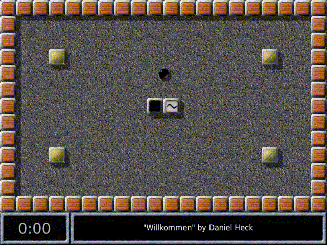

| [Top] | [Contents] | [Index] | [ ? ] |
This manual describes the internals of Enigma, in particular how to build new levels using Lua and how to interact with the game engine. It describes Enigma version 1.00.
| 1. Running Enigma | ||
| 2. Levelpack Basics | Addition and managing of levels in packs | |
| 3. Level Basics | Introduction to level description | |
| 4. Objects | Description of all objects in Enigma | |
| 5. Variables | Lua variables that influence the game | |
| 6. Functions | Predefined functions | |
| Function Index | ||
| Concept Index |
| [ < ] | [ > ] | [ << ] | [ Up ] | [ >> ] | [Top] | [Contents] | [Index] | [ ? ] |
After a hopefully succesfull installation and some first levels you may be interested in some information how Enigma is configured, how you can optimize Enigma to your demands and what some options and attributes within Enigma are for.
This first chapter should give you some valuable information to these questions and provides some basic knowledge you will need to know to manage level packs, levels or write own levels as described in the following chapters.
| 1.1 Locating Resources | ||
| 1.2 Startup Switches | ||
| 1.3 User Options | ||
| 1.4 Level Info | ||
| 1.5 Handicap and PAR | Background to score evaluation and HCP |
| [ < ] | [ > ] | [ << ] | [ Up ] | [ >> ] | [Top] | [Contents] | [Index] | [ ? ] |
For reasons of backup, system changes, special configurations, level additions and hopefully own new levels you may need to know where Enigma stores the resources and how you can control them.
Enigma maintains several paths for control of load and storage of files. You can list these paths either by pressing F2 within the main menu or by starting Enigma with the switch `--log' (see section Startup Switches) and looking at the console output.
This is the path to the file that stores your preferences concerning application
options. This file is usually located at your HOME directory. For HOME-less
Windows users it is stored in the `Application Data\Enigma' directory. As
it is the third version in the history of Enigma the file is named
`.enigmarc.xml' by default.
It is recommended to backup this file, even though it contains only few data that can be quickly reconfigured.
As these preferences are quite specific for the operating system and configuration you will use a different version on each Enigma installation you have.
Mainly for Enigma developers exists a switch `--pref' (see section Startup Switches) to rename this preferences file. By starting Enigma with a renamed preferences file a developer can temporarily use a complete seperated configuration for testing purposes without the danger of destroying his main configuration. The developer may use it to start Enigma with a plain standard configuration for testing purposes, too.
In all cases the preferences filename will be hidden by a leading `.' in the filename.
This is the main path to the users Enigma data. All updates, user installed levels and user written levels, the users scores, history and usually the users screenshots and level previews are stored at this path.
A backup of this directory is mandatory!
The standard location is the directory `.enigma' at your HOME
directory. For HOME-less Windows users it is the `Application Data\Enigma'
directory.
You can define an own path within the User Options. By this means you can store your Enigma user data on a memory stick or you can store them on a shared partition and use them alternatively from two Enigma installations.
This is a second path to the users Enigma data that is used to access images like screenshots and thumbnails of levels. Usually this path is identical to the main `User Path'.
Just in case you make many screenshots and have limited resources on the main `User Path' you may want to store the images on another path. You can define an own path within the User Options.
This path gives you the location of all system resources that are distributed with Enigma. Here you will find the levels, libraries, etc. A first class address to look for examples if you start writing own levels.
This is a list of paths. Every version independent resource is looked up on all paths in this list and loaded from the first occurence.
User data preceed system data. This way updates on your user data path will win. Have a look at this list if you are observe difference between a source and the runtime behaviour. You may have looked at a file that was hidden by another on a preceeding path in this list.
This path shows the directory that contains the localization data.
Please note that some resources like levels may be zipped. In this case a resource that you expect at `dirname/filename' may be stored in a zipfile named `dirname.zip'. The path of the file within the zip can be either `dirname/filename' or `./filename'. In case a resource is provided in zipped and unzipped the plain file stored in a directory wins, as it is assumed to be an update to the zip.
| [ < ] | [ > ] | [ << ] | [ Up ] | [ >> ] | [Top] | [Contents] | [Index] | [ ? ] |
Besides starting Enigma by clicking on a installation provided icon or start menu entry you can start enigma from a shell or commandline. With release 1.00 the Windows version supports this feature without restrictions. Even though it is not necessary using this feature to play the distributed levels you may take advantage of this feature in special or advanced usage.
The following list explains the supported user options. If an option is listed with a long name preceeded by two minus signs and with a one character abbreviation preceeded by one minus sign use one of both notations not both together, f.e. `--data path' or `-d path'.
A switch for Enigma developers that forces all debugging assertions, even expensive ones, to be evaluated. The additionally evaluated checks look like `ASSERT(noAssert || long_lasting_check(), XLevelRuntime, "remark");'.
A switch for Enigma developers that allows to add an additional path to the resource paths that preceeds the system path (see section Startup Switches). A developer can test an Enigma compilation without installation by calling it from the shell with the current working directory on the main directory via `src/Enigma -d ./data'.
Just list the available startup switches to the output and terminate.
A switch that allows to override any other language preference. The language is given in the common 2 character sequence as `fr' for French or `ru' for Russian.
This switch turns on logging of internal information to the standard output. Windows users will find an file called `stdout.txt' in the current working directory. The output will f.e. list the paths described in Locating Resources.
A switch for Enigma developers that causes Enigma not to grab the mouse. Levels can hardly be played in this mode, but it makes it possible to debug the application in its core parts.
Start Enigma without playing backgroud music.
Start Enigma with sounds being switched off.
The name of an alternative preferences file without the leading dot for hidden filenames. This switch is a pure Enigma developer support feature as described in Locating Resources.
Just print the version number to the output and terminate.
Start Enigma in window mode instead of screen mode.
All further arguments supplied on the commandline are taken as level file addresses. You can use absolut or relative addresses to level files stored on your computer. It is also possible to add url's to levels stored in the internet.
A Unix user may start Enigma with the following command:
enigma --log ~/mylevel.xml http://somewhere.com/netlevel.xml
A Windows user may start Enimga from the command line (please adjust the Enigma installation path):
C:\programs\Enigma-1.00\enigma.exe demo_simple.xml
You will find the levels in a levelpack called `Startup Levels' that is by default only visible if you supplied levels on the commandline.
| [ < ] | [ > ] | [ << ] | [ Up ] | [ >> ] | [Top] | [Contents] | [Index] | [ ? ] |
Please keep this option on the value `Never' until release of Enigma 1.00.
Enter your user name that will be attached to the scores. Please have a look at the Enigma home page for user names already in use and choose a new unique name. It is possible to change the user name at any point of time without loosing any scores.
This textfield allows you to define an arbitrary directory for your Enigma user data as described in Locating Resources.
Deletion of the string resets the path to the default.
The new path is activated on leaving the options menu. Even though all files are stored directly to the new path and files will still be found on the old path you may want to quit Enigma immediatly and first copy/merge the old directory to the new location. This copy of your old data is necessary as with the next start Enigma will locate user data at the new location exclusively.
This textfield allows you to define an arbitrary directory for your Enigma user image data as described in Locating Resources.
Deletion of the string resets the path to the default.
The new path is activated on leaving the options menu. Even though all files are stored directly to the new path and files will still be found on the old path you may want to quit Enigma immediatly and first copy/merge the old directory to the new location. This copy of your old data is necessary as with the next start Enigma will locate user data at the new location exclusively.
| [ < ] | [ > ] | [ << ] | [ Up ] | [ >> ] | [Top] | [Contents] | [Index] | [ ? ] |
For every level Enigma manages more data than can be displayed in the level menu. You can view them all with the levelinspector. This special menu can be called from within the level menu by right or control clicking on the level icon.
Besides title and author information is provided concerning a public rating of the level, different score values of interest, details on the level version, the level file location and more. Additionally the levelinspector allows you to enter personal annotations for a level. Any screenshots you made for this level can be directly reviewed from the levelinspector, too.
| 1.4.1 Public Ratings | ||
| 1.4.2 Scores | ||
| 1.4.3 Versions | ||
| 1.4.4 Privat Annotations and Ratings | ||
| 1.4.5 Screenshots |
| [ < ] | [ > ] | [ << ] | [ Up ] | [ >> ] | [Top] | [Contents] | [Index] | [ ? ] |
Most levels are rated within five different categories:
To distinguish the ratings from their everyday-meanings, we use the abbreviations for the ratings. Each of these categories takes values between 1 (easy) and 5 (difficult), except for kno, which can also be 6 (unique mechanism).
Please bear in mind that it's not very simple to hold on to the following definitions in each single of nearly 750 cases, so there might be (will be) derivations from them in single levels.
Intelligence (int)
This is intended to measure the creativity, planning and analytic requirements needed to solve the level. Intelligence is a very difficult notion in itself, and thus at first not easy to rate nor to grasp. Consequently, a fixed definition of the five rating-degrees does not only help in the rating process, but is essential. So, assume you know everything about the single elements of a level. Then ask yourself these questions:
High values for intelligence are typically puzzles. int-ratings do not accumulate; the most difficult puzzle alone already determines the rating.
Dexterity (dex)
There are lots of levels, which can be solved either by accuracy or by patience. In our context, dexterity is not meant in the sense of accuracy to avoid patience, but accuracy to avoid death. So it focuses on the lethal positions in a level, not only death-stones and abysses, but also casualties like pushing a stone accidentally into an unreachable corner.
In contrast to the int-rating, dex might accumulate: Many situations, each of dex 3 can add up to dex 4 or even 5. This way dex 5 can be achieved. Rotors in a level contribute as well to dex as to the speed-rating spe. Thus, levels with a high dex-spe-combination are mostly action-driven, whereas a high dex-pat-combination typically is a dangerous maze.
Patience (pat)
Patience is a relatively subjective rating, and refers much to "feeled time". So two levels with same mechanics can have different pat-values, e.g. if one level has a nicer design or shows the progress of the level in some way, like the number of opened oxyds. It explicitly includes having to start the level over and over again; not the time in the lower left corner or the score is crucial, but the complete feeled time needed to solve the level, starting from the first look at it.
A high number of oxyds can as well heighten the pat-value as lower it: If the player has to traverse the level several times to open matching pairs of oxyds, it is definitely pat-heightening. However, if they are arranged to mark the progress of the player, and deal as a kind of small rewards within the level, they can lower the pat-value. The same with a high number of doors: The arrangement is the critical factor.
High pat-values are typically mazes. In combination with int 3, a high pat-value can indicate a hidden item or a hollow stone. pat-values involve the whole level, so they can't accumulate.
Knowledge of Enigma (kno)
The kno-rating mostly takes on the function and interactions of single objects in the game, like stones, floors, items, and actors. However, in some cases it also deals with special techniques. The guide line is the "Advanced Tutorial", which defines kno 3. kno 4 corresponds to standard objects that aren't shown in the tutorial, kno 5 requires a deeper knowledge of the game internals. Finally, kno 6 indicates special mechanisms, that are seldom or unique. The overall kno-rating of a level equals that of the most difficult object or technique (and thus is non-accumulative):
kno 6 does not neccessarily mean that this level is difficult to understand; the unique mechanism or object might as well be very intuitive, like in "Flood Gates".
Speed and speed control (spe)
The spe-value not only corresponds to the maximum speed a level requires (like it's needed to run away from a rotor), but also the degree of control a player has over his mouse while moving it, excellent examples for this are "Mourning Palace" and the middle part of "Sacrifice". This involves moving the mouse with a constant velocity for a long time, as well as correctly estimating the speed that's needed in a certain task, like shattering a sheaf of glass.
The spe-rating again is cumulative, as many slow rotors can add up to spe 3 or 4 or a combination of many slow time-switches to be pressed in a certain order can make up a horrible task. In contrast to the other categories, for which the average is near 3 (or between 3 and 4 for kno), an overwhelming fraction of all levels are definitely spe 1. So, the spe-rating is more a kind of supplement to the three core-ratings int, dex and pat.
Combinations of ratings
In some cases it can be of interest to have a single value to measure the difficulty of a level. A simple possibility to calculate such a universal rating is to choose a linear combination of the 5 single ratings, weighted with appropriate weights. These weights should correspond to the difficulty a single category adds to the universal difficulty, but these weights also should be carefully chosen to avoid number-theoretic obstructions (e.g. when all weights are even except for the spe-rating, then there will be a visible difference in the distribution of even and odd univeral ratings, which can be very misleading). A working and very interesting linear combination is the following, which has been applied in the reordering process:
universal difficulty = 7*int + 6*dex + 4*pat + 3*kno + 4*spe - 23 |
This has the special property that it takes relatively broadly and continuously distributed values between 1 (all ratings 1) and 100 (all ratings 5, kno 6) and emphasizes the most difficult categories intelligence and dexterity. However, some very small or very high values cannot appear in this combination, like 2 or 99. Other combinations lead to full, but narrow, or to broad but uncontinuous spectra.
| [ < ] | [ > ] | [ << ] | [ Up ] | [ >> ] | [Top] | [Contents] | [Index] | [ ? ] |
The score columns show your and some comparison values for the difficult and for the easy mode if the levels supports it.
The world record is the best score that was retransmitted to the enigma team. The holders of the world record are listed below.
The PAR value is the "professional average rating" of the level. It is the harmonic average of all scores that have been retransmitted. But we take only into account scores from players that have solved a certain number of levels. Opposed to the world record that will be very difficult to gain the PAR value is a much more realistic aim for an ambitioned player. Within the level menu levels are marked with a speeding blackball if you are equal or better than PAR.
The authors value is another reference score. Most authors are not keen on holding the world record of their own levels. But they will likley know the fastest way to solve the level. If your score is much higher than the authors score a simpler solution to solve the level may exist.
The solved number is the number of players who solved this level in the given score version.
The solved percentage is the relation of player who solved this level to the number of players who retransmitted scores. Actually we take only those players in account that could have solved the level. F.e. players that did retransmit scores before the level was written without updating afterwards are not taken into account. A low percentage is a hint for a level that is not easy to solve.
| [ < ] | [ > ] | [ << ] | [ Up ] | [ >> ] | [Top] | [Contents] | [Index] | [ ? ] |
The version column shows detail information about the level. Read chapter Level Basics node see section <version> and see section <modes> for explanation of the values.
For you as a player the `Score' version number can be of some interest. If solve a level with a certain score it may happen that in a updated Enigma release the level appears with a red triangle in the level menu. Even though the level menu displays the medals showing that you solved the level the score values will not be displayed any more. This is due to a incompatible level update that requires a new solution with different incomparable score values. The author will increase the score version number in such a case.
| [ < ] | [ > ] | [ << ] | [ Up ] | [ >> ] | [Top] | [Contents] | [Index] | [ ? ] |
The textfield allows you to enter an annotation for a level that you can review on later replays. Note that the current textfield may not allow you to enter all characters and needs the mouse cursor to remain within its boundaries. But it should work for entering short annotations that may be very useful lateron.
Annotations are stored in your private applications `state.xml' file. There is one annotation per level independent of the level version.
You may rate the levels, too. Just click on the ratings button. Values go from 0 to 10 with an additional `-' for abstention. 0 stands for a poor level that you think is not worth playing, 5 for an average level and 10 for the ultimate best levels. Try to use all values in your ratings.
The ratings are stored together with the scores and will be evaluated annonymously. The resulting average rating of all users is displayed for your information. Note that different ratings are possible for different score versions of the same level. This makes sense as levels may improve on suggestions of users. As long as you do not rerate a new version of a level your rating from a previous version in inherited.
| [ < ] | [ > ] | [ << ] | [ Up ] | [ >> ] | [Top] | [Contents] | [Index] | [ ? ] |
While playing a level you can make screenshots by pressing F10. You can make several screenshots in sequence for documentation purposes. Each will be stored with a unique image filename. With help of the level inspector you can view the screenshots directly from within Enigma. Just click on the screenshot button to view the first image.
As any buttons would disturb the view of a screenshot all functions are keyboard commands. Press F1 to get a help. ESC returns to the level inspector. Page Up and Page Down will show the previous and next screenshot. If you scroll down behind the last screenshot the "missing" screenshot file is named. This may be a useful hint were to search the other screenshot files on your `user image path' (see section Locating Resources).
| [ < ] | [ > ] | [ << ] | [ Up ] | [ >> ] | [Top] | [Contents] | [Index] | [ ? ] |
As PAR (see section Scores) describes the difficulty of a level the handicap `hcp' describes your ability to solve levels in PAR. The handicap is always related to a levelpack or group of levelpacks. For each levelpack you can see your handicap in the level menu if you select the PAR mode by clicking on the lower left button until the speeding black marble appears. The value is displayed in the upper right corner together with the number of levels you solved in PAR.
The handicap is similar to the golfers handicap. A low value is better than a high value. If you solve all levels exactly in PAR your handicap will be 0. If you are even better than PAR your handicap will be negativ. Players can use this value to compare their overall abilities.
Just for those of you that want to know the details of this score rating system of PAR and handicap some additional information that others may well skip to the next chapter Levelpack Basics.
We request all users to send their scores. All scores are evaluated for world records and counts of level solvage rates and numbers.
But for the PAR calculation we take only scores from users into account that have solved more than a certain rate of levels (currently about 10% of the levels). For every level we calculate the harmonic average of the scores of these `professionals'. Professionals that did not solve a level are taken into account with the 10 fold world record score. The harmonic average calculates as
harm.avg. = N / (sum_[j=1..N] 1/score_j) )
It weights small times with a greater weight than large solvage times.
The handicap is a sum of values that describe your scores in relationship to the PAR value of a level. As it has to take into account that you have no score at all or that no PAR value exists some exception rules have to be applied to the addends:
• | + 1.0 | for each unsolved level |
• | + log10(score/par) | for each solved level with existing par if score >= par |
• | + 0.7 | as upper limit for each solved level with existing par if score >= par |
• | + log2(score/par) | for each solved level with existing par if score < par |
• | - 3.0 | as lower limit and as value for levels without par |
Note that each score that is better than PAR results in a negative addend and thus reduces your handicap. For a levelpack with 100 levels the handicap will be in the range of +100 to -300. For levelpacks with more or less levels the sum will be scaled by a factor 100/size to result in comparable handicap values. Handicaps are stated with one digit behind the decimal point.
| [ < ] | [ > ] | [ << ] | [ Up ] | [ >> ] | [Top] | [Contents] | [Index] | [ ? ] |
Knowing the basics of running Enigma you may wonder how levels are organized in levelpacks and how you can add levels or complete levelpacks to Enigma.
Levelpacks are sorted collections of levels that consist of an index and optional attached level sources. Not all level sources of a levelpack have to be included within the levelpack itself. A levelpack can crossreference levels stored in other levelpacks. If a levelpack has no own level sources and consists only of crossreferences we speak of a crossindex as the levelpack is just represented by a single index file.
These definitions suite well to all versions of Enigma. But up to Enigma 0.92 levelpacks needed to be manually edited and the registration of levelpacks was a little bit cryptic. Thus we decided to rewrite the complete levelpack system for Enigma 1.0 and tried to make it versatile and easy to use. We did set us the following aims:
Some of these features work seamlessy. You can use them immediately from the levelpack menu. For others you may need to know where to place files. We will explain these details in the following sections:
| [ < ] | [ > ] | [ << ] | [ Up ] | [ >> ] | [Top] | [Contents] | [Index] | [ ? ] |
One of the outstanding features of Enigma is its extendibility by new levels. And the community of users usually provides us every week several new great levels.
Adding a new level that you receive as an XML file is very simple. Locate the subdirectory `levels/auto' on your `user path' (see section Locating Resources). Just copy the level file to this folder and restart Enigma. The new level will be part of the `Auto' levelpack and can be played like any other level.
Please note that errornous or incompatible levels are displayed with an error icon in the level menu. Of course an attempt to run such a level will result in an error message. Have a look at the level metadata with the levelinspector (see section Level Info) to identify the required compatibility version and contact the author via the address in case of level code errors.
A second way to run new levels is to add the address of the level files to the commandline (see section Startup Switches). This way you can play levels that are stored anywhere. Even Url addresses of levels stored in the internet may be used. Levels added to the commandline are accessable via the `Startup Levels' levelpack.
If you want to run an old fashioned Lua level that was written for Enigma 0.92 or earlier you may try to start it via the commandline. These old levels miss necessary metadata for auto detection. But commandline supplied levels are treated as temporary levels that are available just for a single run of Enigma. The missing data is substituted by reasonable defaults. You will have good chances that the level will run, but scoring and copy, past and linking of such levels is not possible.
Besides single new levels the community may provide you with complete levelpacks, too. These levelpacks may occur as directories with levels, zip archives or single XML files. All of them can be installed by simple copying the files. But we have to distinguish the three formats.
Levelpacks that are distributed as directories with level files and an index file in it have just to be copied to the subdirectory `levels' on your `user path' (see section Locating Resources).
Levelpacks that are distributed as zip archives have to be copied to the subdirectory `levels' on your `user path'. There is no need to unpack the zip even though it is possible as described in the section Zip Levelpacks.
Levelpacks that are distributed as a single XML index file have to copied to the subdirectory `levels/cross' on your `user path'.
After restarting Enigma all new levelpacks should be accessable via the levelpack menu.
That is all you need to know to be able to add new levels and levelpacks for testing and playing. If your main interest lies in writing own levels you may want to preceed directly to chapter Level Basics. The rest of this chapter explains how to arrange and sort existing levels in own levelpacks.
| [ < ] | [ > ] | [ << ] | [ Up ] | [ >> ] | [Top] | [Contents] | [Index] | [ ? ] |
With the changes of the levelpack index format it is necessary to convert old levelpacks. Even though the main work is done automatically just by starting Enigma a few special cases remain that need manual preparations. Furtheron some cleanup after the autoconvertion may be useful.
If you used to maintain your levelpacks within the Enigma system levels directory you should now copy your own levelpacks from the old Enigma version to the `user path' subdir `levels' (see section Locating Resources). The `user path' exists on all systems and as Enigma 1.00 will never write to the system levels directory updates and convertions will only be performed on the `user path'. If you registered your levelpacks on the system levels directory within the `index.lua' file you need to copy these registration lines to a file names `index_user.lua' which you shoud store on your `user path'.
If you maintained several own levelpacks Enigma 0.92 allowed you to keep them in several subdirectories of the `levels' directory. But you were also allowed to keep all level files and different indices in the `levels' directroy itself. In this last case you will run into trouble with the auto convertion as Enigma 1.00 allows only one levelpack with attached level files per directory. In this case we recommend a step by step convertion: in every step provide only one old index for convertion. Enigma will convert this index to an new `index.xml'. Move this new index together with all levels to a subdirectory and convert the next levelpack.
A last special case occurs if you had an old index stored in `levels' that referenced level files in different subdirectories of `levels'. As Enigma 0.92 did not had a concept of cross references and Enigma 1.00 requires all level files attached to a levelpack to be stored in a single subdirectory the convertion algorithm needs to guess the correct subdirectory. It just takes the subdirectory of the first level. If this does not fit you may need to clean up your 0.92 levelpack prior to convertion.
All other standard levelpacks should be converted without problems. The convertion is just performed once. As soon as the new `index.xml' exists only this index is used. Thus after a careful check you may remove the old `index.txt'. We recommend to keep a backup of the old index until you completly switched to Enigma 1.00.
In the case that you used an own levelpack in the zip format you will find a subdirectory named with the base name of the zip archive in your user `levels' directory. Within this directory the converted `index.xml' is stored. You may want to exchange the old `index.txt' in the zip with the new index. Afterwards you can delete the subdirectory as the index will be loaded directly from the zip archive.
After converting your levelpacks we strongly recommend that you update your own levels to the new XML format as described in Level Basics.
| [ < ] | [ > ] | [ << ] | [ Up ] | [ >> ] | [Top] | [Contents] | [Index] | [ ? ] |
Besides the classical levelpack format of a subdirectory of `levels' with an `index.xml' and several level files Enigma 1.00 provides a compatible zip archive format. This zip allows you to reduce resources and to ease distribution of levelpacks.
The compatibility is 100%. If you have a classical subdirectory levelpack you can simply zip the complete subdirectory and name the zip with the name of the subdirectory plus standard `.zip' suffix. Now you can completly remove the subdirectory and the levelpack is autodetected and fully playable. Even cross references into this levelpacks will not be broken!
On the other hand you are allowed to expand every zip levelpack to a subdirectory with index and level files. Again everything runs and no crossreferences are broken.
If you keep both, files contained in the subdirectory preceed files in the zip archive. Thus updates of single files are stored in subdirectories in parallel to existing zip archives.
| [ < ] | [ > ] | [ << ] | [ Up ] | [ >> ] | [Top] | [Contents] | [Index] | [ ? ] |
As the number of levelpacks increased it got necessary to sort and group the levelpacks in the menu. We tried to provide a useful set of default groups and default assignment of the distributed levelpacks to these groups:
But this is just a proposal. You are free to rename the groups, add new groups and change the assignments of the levelpacks. As in other parts of Enigma you can right or control click on the group and levelpack buttons.
The group configuration menu allows you to rename and reposition a group. You can choose any name that is not a duplicate, that is not enclosed in square brackets and differs from `Every Group'. Note that you may not be able to enter all characters that you are used too. Sorry for this inconvenience.
The levelpack configuration menu allows you to assign a pack to a group. The group list contains two special entries: `[Every Group]' and another name enclosed in square brackets. A selection of the first pseudogroup shows up the levelpack in every group. The `Startup Levels' group has this assignment by default. The second square bracket enclosed name is the default group of the levelpack itself. It is a hint for you and allows you to reassign a levelpack to the default group even if you meanwhile have deleted the group.
| [ < ] | [ > ] | [ << ] | [ Up ] | [ >> ] | [Top] | [Contents] | [Index] | [ ? ] |
To create a new levelpack you simply select the group to which you want to add the new pack. This is most likly the `User' group. Right or ctrl click on the group and simply click on the `New Levelpack' button. The levelpack configuration menu will be called that allows you to enter all important data for the creation of a levelpack.
First you should enter a name for the levelpack. You are limited to characters that can be used for filenames, too. Alphanumerical characters A-Za-z0-9 and space, underscore and hyphen are usable. Note that you may rename the pack lateron for a better suitable display name (see section Modifying and Deleting Levelpacks).
Furtheron you should decide whether you want a levelpack that can contain level sources or just a crossreference levelpack. The first one is useful for storing own self written levels or levels that you download yourself from the internet. The crossreference levelpacks are for your favorite collections where you just reference existing levels of other levelpacks with your own personal sorting. You set the selected type with the `Level types' button which uses symbols for references and carbon copies.
The `Default Location' is a number that determines the sorting location within levelpack groups as long as the levelpack has not been resorted manually (see section Grouping and Sorting Levelpacks). This default value is only relevant if you distribute your levelpack and want to ensure that the users will find your levelpack at a proper location. The value given after creating a new levelpack should work fine in most circumstances.
You may declare yourself as owner or creator of the levelpack. This just a string for identification purposes.
Finally when you completed the configuration you can create the levelpack by clickling `OK'. The levelpack will be created on your `userpath' (see section Locating Resources).
If you decide not to create a new levelpack just click `Undo'. Nothing will be created or changed in this case.
If you want to set up immediatly the new levelpack you can click directly on `Compose Pack'. The levelpack will be created and you can use the composer to fill it with levels.
| [ < ] | [ > ] | [ << ] | [ Up ] | [ >> ] | [Top] | [Contents] | [Index] | [ ? ] |
To modify a levelpack right or ctrl click on its button in the levelpack menu. You will see the metadata for all levelpacks. But only for your own levelpacks that are stored on your `userpath' a button `Edit Metadata' will show up. Clicking on it allows you to edit the metadata.
It is possible to rename the levelpack, but the filenames will not be changed any more. The new name will be used as the logical levelpack name that shows up in Enigma.
Other attributes that can be modified are the `Default Location' and the `Owner'.
Note that it is not possible to change the levelpack type lateron. You have to create a new levelpack of proper type and copy the levels by Composing Levelpacks.
We do not provide a levelpack deletion function to avoid uninteded loss of levelsources. But the deletion of a levelpack is as simple as deleting the complete levelpack directory on your `userpath'. For crossreference levelpacks you have to delete just the index XML file on the `levels/cross' subdirectory of your `userpath'.
| [ < ] | [ > ] | [ << ] | [ Up ] | [ >> ] | [Top] | [Contents] | [Index] | [ ? ] |
You can change the levels of a levelpack by the levelpack composer. You call it by right or ctrl clicking on the levelpack button in the levelpack menu and clicking on the `Compose Pack' button in the levelpack configuration menu.
The composer looks quite similar to the levelmenu but it provides other functionallity. All commands are listed in the F1 help menu. First you may note that the levels are bordered red if you compose your own levelpacks. This is a warning as you can modify these levelpacks. System levelpacks as the distributed Enigma levelpacks will border the levels in gray as you can use the composer only for copying levels to the clipboard.
The clipboard allows you to select levels in one or several levelpacks and to insert these levels as reference or as copy to your own levelpacks. First clear the clipboard by `Shift delete'. Then select within the composer levels from any levelpack you want. Add them by `Shift click'. They will show up in the upper text lines in the composer. Return to the levelpack where you want to add the levels. Select the level behind which you want to add the levels. Use `F8' to insert the levels of the clipboard as references. If you edit a levelpack that can take level copies you may use `F9' to insert the levels of the clipboard as file copies.
As soon as you modify the levelpack a small red triangle in the upper left corner signals the modification. Leaving the composer via button `OK' finalizes all changes. Leaving the composer via button `Undo' reverts all changes.
Besides addition of levels you can delete levels by usage of the `delete' button. Note that the level files itself will be deleted if you delete a level that is not just a reference. Be careful with all levels that have the document icon on its preview. Deletions can be reverted by the `Undo' button.
All levels can be resorted by `alt left arrow' and `alt right arrow'. The new sorting is shown up directly and saved by the `OK' button.
The `F5' button updates the index from the levels. This is very useful if you edit levels yourself. Changes in title, revision, easy mode support etc. will be noticed by the levelpack. All levels of the levelpack are updated at once.
By usage of the Auto levelpack and the composer you can setup levelpacks of your own levels as follows. Create a new levelpack, add the level files to the `auto' folder, restart Enigma, add the levels from the `auto' folder to the clipboard, insert the levelpack by the composer to your levelpack as copies, delete the unused level file copies from the `auto' folder.
| [ < ] | [ > ] | [ << ] | [ Up ] | [ >> ] | [Top] | [Contents] | [Index] | [ ? ] |
As you have played some levels of Enigma you may have noticed that Enigma is a quite dynamic game with versatile levels. Thus it is not astonishing that it is not possible to describe such levels with a static approach of a simple object map like Sokoban. Some levels like mazes, generate their layout and look different each time they are played. Other levels provide a dynamic behaviour during the play. F.e. switches may open doors only on certain circumstances. To comply these demands the powerful light-weight C extension language Lua has been integrated into Enigma.
Up to Enigma 0.92 two different level formats did exist. One was a XML like format that was primarily designed for external level editor programs. As its static object map description part was inconvenient for manual edition it was never used by many authors. The second format was plain Lua code that used an interface of Enigma Lua functions to add objects and callback functions. This second format was used by nearly all authors. But it had a small drawback - metadata for the level like the author name, license info and last but not least the level name itself could only be stored as unformatted Lua comments and had to be reinserted manually into the level-package indices.
With the post 0.92 XMLification of Enigma we achieved full XML support by integration of Apache Xerces and were wondering how to get rid of the old level format drawbacks and how to add some compelling new features:
Let us have a first view on complete simple `Hello World' level in the new format:
<?xml version="1.0" encoding="UTF-8" standalone="no" ?>
<el:level xmlns:xsi="http://www.w3.org/2001/XMLSchema-instance" xsi:schemaLocation="http://enigma-game.org/schema/level/1 level.xsd" xmlns:el="http://enigma-game.org/schema/level/1">
<el:protected >
<el:info el:type="level">
<el:identity el:title="Demo Simple" el:id="20060210ral001"/>
<el:version el:score="1" el:release="1" el:revision="0" el:status="stable"/>
<el:author el:name="Ronald Lamprecht"/>
<el:copyright>Copyright © 2006 Ronald Lamprecht</el:copyright>
<el:license el:type="GPL v2.0 or above" el:open="true"/>
<el:compatibility el:enigma="0.92"/>
<el:modes el:easy="false" el:single="true" el:network="false"/>
<el:score el:easy="-" el:difficult="-"/>
</el:info>
<el:luamain><![CDATA[
levelw = 20
levelh = 13
create_world( levelw, levelh)
draw_border("st-wood")
fill_floor("fl-leavesb", 0,0,levelw,levelh)
oxyd( 4,4)
oxyd( 14,4)
set_actor("ac-blackball", 4, 11)
]]></el:luamain>
<el:i18n/>
</el:protected>
</el:level>
|
You may notice that the XML part contains all the metadata that the level author is used to supply with a level. The XML part is like a formular that can be copied from a template and be filled out.
The Lua code is embedded in the XML. The only limitation to the Lua part is that `]]>' is reserved for the end mark and would have to be substituted by `]] >'. No further restrictions.
As the example above includes all mandatory XML parts our aim to avoid major changes for Lua level authors should be achieved.
You find the example above in the `Exp' levelpack grouped in `Development'. The source code is located on the system path subdirectory `levels/enigma_experimental' (see section Locating Resources).
If you make your first coding experiments on a copy of this level either add your copy to the auto folder (see section Getting Started with Levelpacks) or use it as an argument on the command line (see section Startup Switches).
Of course we have to look at the details of the format and explain the optional parts:
| 3.1 Getting Started with Levels | ||
| 3.2 XML Level structure | ||
| 3.3 Info metadata | ||
| 3.4 LUA code | ||
| 3.5 Internationalization (i18n) | ||
| 3.6 Usage | ||
| 3.7 Update and Upgrade | ||
| 3.8 Libraries |
| [ < ] | [ > ] | [ << ] | [ Up ] | [ >> ] | [Top] | [Contents] | [Index] | [ ? ] |
A Simple Level
Here is a very simple level description that can also serve as a starting-point for new landscapes. (In fact, this is the first level in Enigma, so you can try it out right away.)
1 CreateWorld(20, 13)
2 draw_border("st-brownie")
3 fill_floor("fl-hay", 0,0, level_width,level_height)
4
5 set_stone("st-fart", level_width-1,0, {name="fart"})
6 set_stone("st-timer", 0,0, {action="trigger", target="fart",
7 interval=10})
8
9 oxyd(3,3)
10 oxyd(level_width-4,level_height-4)
11 oxyd(level_width-4, 3)
12 oxyd(3,level_height-4)
13 oxyd_shuffle()
14
15 set_actor("ac-blackball", 10,6.5)
|
The resulting level looks like this inside the game:

Let's now turn to a line-by-line analysis of this program:
1 CreateWorld(20, 13)
2 draw_border("st-brownie")
3 fill_floor("fl-hay", 0,0, level_width,level_height)
|
The level begins with a call to CreateWorld, which creates a
new world that is 20 blocks wide and 13 blocks high. Every
block in the world can be accessed with a pair of coordinates:
The upper left corner has coordinates (0,0), the lower right one has
coordinates (19,12). Every block contains a floor tile, an (optional)
item, and an (optional) stone.
A frame of stones is drawn around the newly created landscape with the
draw_border command. Its argument, "st-brownie", is the
name of a stone. By convention, all stones have "st-" prefixed
to their name, similarly all item names begin with "it-" and
all floor names with "fl-".
The fill_floor command in line 3 fills the complete floor with
tiles of type "fl-hay". The other arguments are the upper left
corner and the width and height of the rectangle to be filled.
5 set_stone("st-fart", level_width-1,0, {name="fart"})
6 set_stone("st-timer", 0,0, {action="trigger", target="fart",
7 interval=10})
|
Lines 5 to 7 demonstrate how to create individual stones. The
set_stone command takes a stone name, the desired
coordinates, and an (optional) list of attributes
as arguments. Note the use of curly braces {,
} to enclose the attribute list.
Attributes are the key to customizing the behaviour of objects in a landscape. Here, we first give a name to the first stone we create. It's a fart stone that has the unpleasant habit of "blowing off" when triggered. Triggering this fart stone is done by the timer stone we create in line 6-7. This stone performs a predefined action at regular intervals. In this case we want to send a "trigger" message every ten seconds to the object named "fart".
9 oxyd(3,3) 10 oxyd(level_width-4,level_height-4) 11 oxyd(level_width-4, 3) 12 oxyd(3,level_height-4) 13 oxyd_shuffle() |
These commands place a couple of oxyd stones in the level. The
oxyd command internally uses set_stone("st-oxyd", x,y,
…) to create the stones, but it additionally assigns sensible
values to some of the oxyd stones' attributes (most notably the
color). The command on line 14 permutes the colors on the oxyd stones
currently in the landscape.
15 set_actor("ac-blackball", 10,6.5)
|
This final line creates the black marble controlled by the player. Objects that can move around freely are called "actors" in Enigma. Unlike stones and items, actors are not restricted to integer coordinates, as you can see in this example.
| [ < ] | [ > ] | [ << ] | [ Up ] | [ >> ] | [Top] | [Contents] | [Index] | [ ? ] |
Let us start with a complete overview of all existing top XML element nodes. The following level skeleton contains optional elements that are beyond level basics. These elements are just included for completeness:
<?xml version="1.0" encoding="UTF-8" standalone="no" ?>
<el:level xmlns:xsi="http://www.w3.org/2001/XMLSchema-instance" xsi:schemaLocation="http://enigma-game.org/schema/level/1 level.xsd http://enigma-game.org/schema/editor editor.xsd" xmlns:el="http://enigma-game.org/schema/level/1" xmlns:ee="http://enigma-game.org/schema/editor">
<el:protected>
<el:info el:type="level">
<!-- required elements omited -->
</el:info>
<el:elements/>
<el:luamain><![CDATA[
]]></el:luamain>
<ee:editor/>
<el:i18n/>
</el:protected>
<el:public>
<el:i18n/>
<el:upgrade/>
</el:public>
</el:level>
|
The first line is the XML declaration. It is fixed besides the encoding specification. Enigma supports on all platforms at least `US-ASCII', `UTF-8', `UTF-16', `ISO-8859-1', `windows-1252'. Enter your encoding and ensure that your editor saves the level in this encoding. On some editors you can start in ASCII mode, copy the level skeleton with a different encoding declaration like UTF-8, save the level still in ASCII mode and reopen the file - the editor may detect the XML declaration and switch automatically to the given encoding. Note that as long as you do not enter international strings in the level you do not have to bother with the encoding at all. You can choose UTF-8 in this case.
Some addiontal remarks for XML newbies. The XML markup tags are quite similar to HTML. But XML requires for each start tag `<element>' a corresponding end tag `</element>'. For elements that have only attributes and no content you can and should use the alternativ empty element notation `<element/>'. Note that when we define an element as empty or state that no content is allowed not a single whitespace, even no linebreak is allowed between start and end tag - use the empty element notation to avoid mistakes.
We use a pretty printing format with an indention of 2. Each element starts on a separate line. Elements with text content have the end tag on the same line. Only elements with subelements have the end tag on a separate line with the same indention.
This format is not mandatory. You can even insert linebreaks in text contents and within the marks and even within attribute values. But note that the basic rule is that each linebreak will be substituted by a space during the XML parsing. Take this space into account to avoid mistakes, or simply live with the long lines.
All tag names and attribute names are prefixed with a namespace identifier. We use `el' as an abreviation for enigma level. All tag names that may be manually edited use this prefix.
And finally a short comment to the XML reserved characters `&' and `<'. These two characters are reserved as tag and entity starting characters. If you have need for them in text contents or in attribute values you have to substitute them by the entity sequences `&' and `<'. Additionally attribute values have to be enclosed either by `"' or `''. Of course the used enclosing character has to substituted in attribute values, too. Use `"' and `&apos'.
Elements:
This is the root node. There is only one instance of this node per file. Like the first XML declaration line this second line is quite fixed. There are two versions. The simple 3 attribute version as used in the first example and the 4 attribute version as above that is only used by level editor programs. For manual level edition just copy the simple version as the second line to your level file.
Attributes:
Namespace definition for the schema. The contents is fixed to "http://www.w3.org/2001/XMLSchema-instance". The attribute tag `xsi' must match the prefix of the next attribute tag and is standard.
Location of the used schemas. The contents is the fixed enigma level namespace followed by the schema location URL. Level editor programs will add their namespace and their schema location URL as in the second example above.
Namespace definition for enigma level. We use `el' as namespace prefix for all level element and attribut tags as standard. The used prefix can be arbitrary but must match this attibutes tag. The contents of the attribute is fixed to the enigma level namespace.
This last namespace definition is used by level editor programs only. As an example we declared `ee' as namespace prefix for all editor element and attribute tags. The used prefix can be arbitrary but must match this attibutes tag. The contents of the attribute is the editors namespace.
The protected node section contains all level data that derive from the author and should not be modified by anyone else.
The info node section contains all level metadata. It is mandatory and described in detail at section Info metadata.
The elements node section is optional. It contains level description parts that are given in a data driven manner. Even though the driving force is the support for level editor programs a level author may use any parts of this section he likes.
The luamain node section is the part to insert manually Lua level descriptions. It is described in detail at section LUA code.
The editor node section is an open extension area for level editor programs. They can add any additional information in this section that they have need of. This node section is simply ignored by Enigma.
The i18n node section contains English strings, native translations and comments supplied from the author for the translators. This node section is mandatory and described in detail at section Internationalization (i18n).
This public node section is an optional extension to the proteced part. It contains information that is not validated by the author and may even be added after the last authors review.
This public i18n section contains further level supplied translations. They may derive from the author or other sources. These translations will be validated by the translators and are used as long as the translators do not supply corrected versions. See Internationalization (i18n).
This upgrade node is part of the Update and Upgrade system.
| [ < ] | [ > ] | [ << ] | [ Up ] | [ >> ] | [Top] | [Contents] | [Index] | [ ? ] |
The Info node contains all author supplied metadata of the level. This is the source of these data. All other parts of Enigma like level indices just contain copies that will be automatically updated to the levels original data.
Let us have a look on all supported subnodes of info with typically used attributes:
<el:info el:type="level"> <el:identity el:title="Demo I18N" el:subtitle="Translate or let it be translated" el:id="20060211ral002"/> <el:version el:score="1" el:release="1" el:revision="0" el:status="experimental"/> <el:author el:name="Ronald Lamprecht" el:email="ral@users.berlios.de"/> <el:copyright>Copyright © 2006 Ronald Lamprecht</el:copyright> <el:license el:type="GPL v2.0 or above" el:open="true"/> <el:compatibility el:enigma="0.92"/> <el:modes el:easy="false" el:single="true" el:network="false"/> <el:comments/> <el:update el:url="http://…"/> <el:upgrade el:url="http://…" el:release="2"/> <el:score el:easy="-" el:difficult="-"/> </el:info> |
Attributes:
The schema may be used for single enigma levels, libraries that contain level description parts for reusage as well as descriptions for multiple levels at once.
`level' are all single level descriptions. It does not matter if they are edited manually or by a level editor program and which description elements are used
`library' are level description parts that may be included into levels. The library may consist just of Lua code in the luamain node or addtional object descriptions in the elements node. Libraries may make use of nearly all nodes besides the `/level/protected/info/score' and `/level/*/i18n' which both have to be provided but will not be evaluated. Libraries are included into levels via the dependency node-element. See <compatibility>.
`multilevel' are descriptions for multiple levels at once. The main purpose is to support foreign game level formats like the Sokoban level format which describes usually a whole set of level maps in a single file.
The number of levels contained in a multilevel file.
Contents - Elements:
The title, subtitle and the main level identification string. See <identity>.
All aspects of the level <version>.
All information provided about the author him- or herself. See <author>.
The <copyright> message for the level.
Information about the <license> conditions.
All information about <compatibility> to Enigma releases, dependencies from libraries, external data and the editor program that generated the level.
The <modes> that the level supports, as difficulty, network and control.
Optional comments like credits, dedication and code comments. See <comments>.
The authors own <score> of this level.
| 3.3.1 <identity> | ||
| 3.3.2 <version> | ||
| 3.3.3 <author> | ||
| 3.3.4 <copyright> | ||
| 3.3.5 <license> | ||
| 3.3.6 <compatibility> | ||
| 3.3.7 <modes> | ||
| 3.3.8 <comments> | ||
| 3.3.9 <score> |
| [ < ] | [ > ] | [ << ] | [ Up ] | [ >> ] | [Top] | [Contents] | [Index] | [ ? ] |
The `identity' element is required, as it provides the information for human and system identification of the level.
<el:identity el:title="Demo I18N" el:subtitle="Translate or let it be translated" el:id="20060211ral002"/> |
Attributes:
The English title of the level. Make sure that the title is not too long as it will be used on the level selection menu. Translations of the title can be provided in the Internationalization (i18n) sections.
An optional english subtitle. Used for title parts that are too long for the main title, or for a short first hint. The subtitle is displayed on the level info page and on the start of the level. Translations of the subtitle can be provided in the Internationalization (i18n) sections.
This is the central system identification string of the level that remains valid for all time independent of upcomming release updates. Enigma's single demand on the id is that it is unique. Unique among all levels created by all authors around the world.
As levels can be edited with any text editor or different special Enigma level editors there is no control about the uniqueness. Thus we have to provide a simple convention to avoid any possible id clashes:
YYYYMMDDuserNNN
Where `YYYY',`MM',`DD' is the date of the creation of the first experimental version, `user' stand for a user specific name and `NNN' for a random number. F.e. my level called `Houdini' has the id `20060816ral719'. Of course all level created on the same day have to differ in the random number part. The id is a Enigma level system id and is never exposed to users.
For backward compatibility legacy levels keep their former filename as the new level id and do not fit in the name schema given above. But that does not harm as the only requirement is the uniqueness.
Contents:
The element itself is empty - no content is allowed.
| [ < ] | [ > ] | [ << ] | [ Up ] | [ >> ] | [Top] | [Contents] | [Index] | [ ? ] |
This element provides the versioning information for the system.
<el:version el:score="1" el:release="1" el:revision="0" el:status="experimental"/> |
Attributes:
The score version is given as a positiv integer number. New levels start with score verison "1". New level versions need to increase the score version number if the level modifications cause different solutions with uncomparable score values. Of course level authors should be very restrictive with such modifications.
During the development of a level the attribute `status' should be used to mark a level as not released. Not later than the author changes the `status' to `released' he has to check scoring compatibility and increase the score version if necessary.
This attribute is the logical equivalence to the Enigma 0.92 `index.txt' attribute `revision'.
The technical release version is given as a positiv integer number. New levels start with release version "1". New level versions need to increase the release version number if the level modifications either cause technical incompatibilities with previous Enigma releases or the scoring version has been increased.
The primary cause for technical incompatibilities should be the compensation of Enigma engine changes. As such compensations will not run on the old Enigma version the level versions have to be distinguished by a different release number.
In both cases, technical and scoring incompatibilities, the level file name has to be changed, too. This is necessary as on some systems different Enigma versions may be installed at the same time. They have the need for both level versions at the same time. Internet servers providing Enigma levels need to offer different level release at the same time, too.
To enable humans to assign different level release files to a level itself we strongly recommend the name convention for levels AuthoridentifierLevelnumber_Releasenumber.Suffix. Where the levelnumber is at least 2 digits. For example `ral01_2.xml'
The revision number is a simple ever increasing version number. Every published version of the level should have a new revision number. The revision number is independent from the scoring and release version number.
If Enigma finds two levelfiles in its data serach paths with identical filenames, id, score and release version it will load the one with the higher revision number. This feature guarantees, that a new revision of a level distributed with a new Enigma release can not be shadowed by an older level revision stored on the users home level directory. Online updates will check the level revision numbers, too.
Even though the revision evaluates to a number the attribute can take a second string format as the literal keyword `$Revision: 1.2 $'. This Subversion format allows level authors to let the level revision number be automatically inserted by their Subversion repository. They just have to set `svn propset svn:keywords "Revision" level.xml' at their repository for every level file. As the Subversion revision number is ever increasing it fulfills our criteria. Note that there is no need for revision numbers to be consecutive.
This attributes describes the quality of the level during development. Enigma uses the status to protect the score database to be spoiled by unplanned solution scores. Only for levels marked as `released' scores will be recorded.
A level author who starts a change on a released level should first change the status back to `experimental'. Then he should make his changes and test the level. When he is definitivly sure that he did not introduce any spoilers he can release the level again with a new revision and may be release or score version number.
Contents:
The element itself is empty - no content is allowed.
| [ < ] | [ > ] | [ << ] | [ Up ] | [ >> ] | [Top] | [Contents] | [Index] | [ ? ] |
The information about the author him/herself. The element itself is required. But all attributes are optional to allow an author to be anonymous. Please remember, that level adminstrators and translators may have a need to contact you as an author. So please give a way to drop a note for you.
The author element node may look like:
<el:author el:name="Ronald Lamprecht" el:email="ral@users.berlios.de" el:homepage="http://myhomepage.domain"/> |
Attributes:
The authors name as it will be displayed on the level info page and on the start of the level. The name defaults to `anonymous'.
The authors email address or a newsgroup or forum he listens to. In general a hint how to drop a note for him. The value will just be displayed as a string on the level info page.
An address about the author or where the author publishes further Enigma levels. The value will just be displayed as a string on the level info page.
Contents:
The element itself is empty - no content is allowed.
| [ < ] | [ > ] | [ << ] | [ Up ] | [ >> ] | [Top] | [Contents] | [Index] | [ ? ] |
The standardized location for a copyright message of the author:
<el:copyright>Copyright © 2006 Ronald Lamprecht</el:copyright> |
Attributes:
none
Contents:
The copyright notice of the author.
| [ < ] | [ > ] | [ << ] | [ Up ] | [ >> ] | [Top] | [Contents] | [Index] | [ ? ] |
Of course every author is free to choose the license conditions for his levels. But the author has to state the conditions. Thus this node element and its attributes are required:
<el:license el:type="GPL v2.0 or above" el:open="true"/> |
Attributes:
A short license identifier of the license type with an optional link address to the license text or the string `special' if the author supplies an own license as the content of this element.
A boolean statement if the choosen license fulfills the criteria of the Open Source Initiative (OSI). Please note that a value of `false' may keep your level of being distributed together with Enigma.
Contents:
A complete license text may be added as the contens of this element. Please make use of identification of the level via the type attribute.
| [ < ] | [ > ] | [ << ] | [ Up ] | [ >> ] | [Top] | [Contents] | [Index] | [ ? ] |
<el:compatibility el:enigma="0.92" el:engine="enigma"> <el:dependency el:path="lib/natmaze" el:id="lib/natmaze" el:release="1" el:preload="true" el:url="http://anywhere.xxx/mypage/natmaze.xml"/> <el:externaldata el:path="./extfile" el:url="http://anywhere.xxx/mypage/extdata.xml"/> <el:editor el:name="none" el:version=""/> </el:compatibility> |
Attributes:
The minimal Enigma release number required for compatibility.
The required engine compatibility mode that influences the behaviour of various objects. This attribute is only evaluated for levels. Libraries ignore this attribute.
Contents - Elements:
The comments element itself contains only subelements as content.
With the use of this element you can specify any Enigma-Lua library this levels depends on. You can specify several libraries by multiple occurence of this element. If you configure a library to be preloaded it will be loaded by the engine before any level Lua code is loaded and executed. The load sequence of several libraries conforms strictly to the sequence of their dependencies elements.
Attributes:
The resource path of the library without it's suffix and any release extension. As most libraries are stored in the `lib' subdirectory of Enigma's `levels' directory the resource path will be in most cases like the one in the example above: `lib/ant'. This is the valid path for the library file that may be either `levels/lib/ant.xml' or `levels/lib/ant.lua' or `levels/lib/ant_1.xml'.
But libraries can also be totally level pack specific. In this case you may use a relative resource path like `./mylib' and store the library in the level pack directory itself.
The version independent id of the library as specified in the library metadata. It will be checked on load of the library to avoid problems and may be used together with the release number to detect relocated libraries.
Even though different release versions of libraries have to have different filenames we require to specify the library version. It will be checked on load of the library to avoid problems and may be used together with the id to detect relocated libraries.
A boolean statement that specifies whether the library should be preloaded. If the library is not preloaded you can still load it via Lua code statements. But even those libraries have to be declared as they will be checked on conformance. You should always preload your libraries if you make use of the `elements' section.
This optional attribute allows to specifiy a backup address for the library. This will be usefull for the usage of new libraries that are not yet distributed with the system.
For the development and test phase of new libraries themself a developer can hand out test levels with an empty `library' resource path attribute. The test levels will load the newest library version as published at the given url.
Contents:
none.
This element can be used to specify any external data file this levels depends on. You can specify several files by multiple occurence of this element. Files declared can be read via the Lua interface.
This feature should support levels that simulate foreign games like Sokoban within Enigma. Due to copyrights and license conditions it may not be possible to include some data within a level. But it may be legal to distribute the data in the original unmodified format.
Attributes:
The resource path of the external data file with it's suffix. As the data are usually level specific they should be stored aside of the level in the same levelpacl directory. Thus a relative resource path like `./datafile.ext' should be preferable.
This optional attribute allows to specifiy an online address for the external data file. Only wellformed xml data files can be accessd by this method.
The online access method should only be used as a backup address or due to very restrictive license conditions that make it impossible to distribute the data file together with Enigma.
Contents:
none.
This element can be used by special level editor programs to store information about themselves.
Attributes:
The name of the level editor.
A version number of the editor given as a string. .
Contents:
none
Contents:
none
| [ < ] | [ > ] | [ << ] | [ Up ] | [ >> ] | [Top] | [Contents] | [Index] | [ ? ] |
The modes element allows the author to declare the supported and the default modes of his level. Enigma's engine checks that the level is used in supported modes.
<el:modes el:easy="false" el:single="true" el:network="false" el:control="force" el:scoreunit="duration" el:scoretarget="time"/> |
Attributes:
If a level provides a second easy-difficulty mode set this attribute to `true'. If only a one difficulty mode is supported set this attribute to `false'.
If a level provides a single player game as it is standard set this attribute to `true'. Only if the level is a 2-player-network game only set this attribute to `false'.
If a level provides a 2-player-network game set this attribute to `true'. If not set this attribute to `false'.
This attribute defines the standard control mode of the level. A level can be played by using the mouse to generate forces on the marbles as it is the standard and only way up to Enigma 0.92. Or a level can be played using the mouse, or other input devices to balance the level-world with the marbles. Or the keyboard may be used with its cursor keys to move the actor like in classical Sokoban games.
Even though the user has always the last choice to define the input method he currently wants to use the author has to define the standard control-mode that is used by the scoring system. Only scores achieved in the defined control mode will be saved and evaluated for high score lists.
This attribute defines the evaluation and display mode of score values. By the default `duration' the score is intepreted as level solution time and displayed in a MM:SS format. In the `number' mode scores are displayed as plain numbers and lower numbers be evaluated as better scores. This mode is appropriate for counting of pushes and moves.
The score target triggers the measuring of score values. `time' will take the solution time, `pushes' counts the pushes of stones, `moves' counts the moves of the actor. Any other value will call a Lua function for score values. The target is used as a short title for the score in user interface displays.
Contents:
none
| [ < ] | [ > ] | [ << ] | [ Up ] | [ >> ] | [Top] | [Contents] | [Index] | [ ? ] |
The optional comments node allows the author to add a few comments and to determine how they should be processed. Please note that comments will not be translated by the internationalization support.
<el:comments>
<el:credits el:showinfo="true" el:showstart="false">Thanks to the author of my favorite libs</el:credits>
<el:dedication el:showinfo="true" el:showstart="false">To a honorable or a beloved person</el:dedication>
<el:code>some important general notes</el:code>
</el:comments>
|
Attributes: none
Contents - Elements:
The comments element itself contains only subelements as content.
The place to honor people who did make your level running.
Attributes:
A value of `true' will make the message being displayed on the level info page
A value of `true' will make the message being displayed on startup of the level. Please use this feature only in rare cases.
Contents:
The credits message itself. It may be broken over several lines. Whitespaces will be collapsed before display.
The place to dedicate the level to a honorable of a beloved person. Please use this place instead of adding document-items within the level.
Attributes:
A value of `true' will make the message being displayed on the level info page
A value of `true' will make the message being displayed on startup of the level. Please use this feature only in rare cases.
Contents:
The dedication message itself. It may be broken over several lines. Whitespaces will be collapsed before display.
Attributes:
none.
Contents:
The main code comment that may be an explanation of the <version> status or a todo list. It may be broken over several lines. This comment will not be processed.
| [ < ] | [ > ] | [ << ] | [ Up ] | [ >> ] | [Top] | [Contents] | [Index] | [ ? ] |
In this node the author should provide his own scoring values as hints and challenge for other players. All values are related to the control mode defined in <modes>.
<el:score el:easy="01:07" el:difficult="-"/> |
Attributes:
The solvage time for the easy mode. The format is either MM:SS where MM stands for the minutes, and SS for the seconds, or - if the author did not yet solve the level himself. For levels with a score unit mode `number' the value would be the number of marble moves or pushes.
The solvage time for the difficult mode. The format is either MM:SS where MM stands for the minutes, and SS for the seconds, or - if the author did not yet solve the level himself. For levels with a score unit mode `number' the value would be the number of marble moves or pushes.
Contents:
| [ < ] | [ > ] | [ << ] | [ Up ] | [ >> ] | [Top] | [Contents] | [Index] | [ ? ] |
This elements takes any Lua code as a single chunk with nearly no limitations:
<el:luamain><![CDATA[
levelw = 20
levelh = 13
create_world( levelw, levelh)
draw_border("st-wood")
fill_floor("fl-leavesb", 0,0,levelw,levelh)
oxyd( 4,4)
oxyd( 14,4)
document(5,10,"hint1")
document(10,10,"hint2")
document(10,5,"Heureka!")
set_actor("ac-blackball", 4, 11)
]]></el:luamain>
|
Attributes:
none
Contents:
This element takes the main Lua code as its contents.
All other possible libraries that are declared as dependencies and Lua chunks supplied by XML elements are preloaded as described in <compatibility>. Generally there is no more need to use Lua functions like `Require' to load libraries. Just in case you need to control the point of execution were the library has to be loaded you can declare the library with the attribute `el:preload="false"'. You should use the new function enigma.LoadLib to load the library.
The Lua code itself that is enclosed in a XML CDATA section. This limitates the Lua code to not use the reserved end marker `]]>'. Any occurence has to be substituted by `]] >'.
On the other hand the XML format extends the Lua capatibilities to the usage of encodings. You may use Lua strings and comments with Umlauts. But Lua identifiers are still limited to pure US-ASCII. The benefit is that you can use Umlauts and other non ASCII characters within it-document hints.
| [ < ] | [ > ] | [ << ] | [ Up ] | [ >> ] | [Top] | [Contents] | [Index] | [ ? ] |
The internationalization of levels is one of the driving forces behind the level format changes. As you may have noticed there are two `i18n' elements, one in the authors protected section and one in the public. Let us look how to use them for internationalization of the three documents of our `demo_i18n.xml' level:
<el:protected >
<!-- elements ommited -->
<el:i18n>
<el:string el:key="title">
<el:english el:translate="false"/>
</el:string>
<el:string el:key="subtitle">
<el:english el:translate="true"/>
<el:translation el:lang="de">Übersetzten oder übersetzten lassen</el:translation>
</el:string>
<el:string el:key="hint1">
<el:english el:comment="Let 'right' be ambiguous: correct and opposite of left - if not possible choose correct">Read the right document</el:english>
<el:translation el:lang="de">Lies das rechte Dokument</el:translation>
</el:string>
<el:string el:key="hint2">
<el:english el:comment="the correct one and not the right positioned one">The right one, not the right one!</el:english>
<el:translation el:lang="de">Das rechte, nicht das rechte</el:translation>
</el:string>
<el:string el:key="Heureka!">
<el:english el:translate="false">Heureka!</el:english>
</el:string>
</el:i18n>
</el:protected>
<el:public>
<el:i18n>
<el:string el:key="hint1">
<el:translation el:lang="fr">Lisez la document de droite</el:translation>
</el:string>
</el:i18n>
</el:public>
|
Two of the documents use key words to reference a string. The last one uses the English string itself as the key. There are two additional reserved keys `title' and `subtitle'.
For each string we like to translate or have translated we define a `string' subelement of the protected section and add a `english' subelement to the `string' element itself. The `string' element just takes a single mandatory attribute - the key of the string. The `english' element has a one mandatory attribute `translate' that defaults to `true' stating the author decision whether the string should be translated. In case the author does not want a string to be translated he can, and will, just add no `string' element for this string at all. Thus the elements for the strings with the keys `title' and `Heureka!' are optional and quite unusual.
`title' and `subtitle' have the English text given in the <identity> element. All other strings referenced by keys need to add the English text as the content of the `english' element. `hint1' and `hint2' are examples.
As we did choose quite ambiguous English texts it is very likly that translators who do not play the game and just get the text to translate may deliver a wrong translation. To avoid mistakes a level author may add a `comment' attribute to the `english' element. The translator receives this comment together with the English string as we will see lateron.
If the author is not native English speaking he should add himself `translation' subelement to the `sting' element. The `translation' element has a single mandatory attribute `lang' that takes the 2-character language abbreviation. The contents of the element is the translation itself.
All translations added in the protected section take preceedance over any translators translation and will work directly after addition without waiting for a translators translation.
Last but not least we have a `i18n' element in the public section. This element takes translation suggestions. They may be added by the author himself for further languages he is aware of. They may be added by other people on the way to the user or even the user himself.
Translations in this section will again work directly after addition without waiting for a translators tranlation. But they will be preceeded by available translations provided by translators.
The format is identical to the protected section, with the exception that no `english' element may be provided. The `key' attribute in the `string' element must match exactly the `key' attribute in the corresponding `string' element in the protected section. There is one subtle difference due to technical and practical reasons. `key' attributes in the public section need to be XML identifiers - thus you can not provide public translations for strings that use the english phrase as the key. Choose a keyword and provide the english string in the public `i18n' section to avoid these troubles.
The `string' element in protected section as well as in the public section must be unique concerning the attribute `key' within the section. This means you should add translations for all known languages for a string in `string' element in the proteced and one in the public section. The sequence does not matter.
Let us have a look what the translator gets presented for each string. Let us start with `hint2' for the German translator:
# level: "Demo Internationalization" # author: "Ronald Lamprecht" email "ral@users.berlios.de" # comment: "the correct one and not the right positioned one" # use: "Das rechte, nicht das rechte" #: po/level_i18n.cc:17 msgid "The right one, not the right one!" msgstr "" |
`msgid' is the English string. `msgstr' takes the German translation. But the translator does not need to translate as the German tranlation was given by the author in the `# use:' line
And as another example `hint1' for the French translator:
# level: "Demo Internationalization" # author: "Ronald Lamprecht" email "ral@users.berlios.de" # comment: "Let 'right' be ambiguous: correct and opposite of left - if not possible choose correct" # check: "Lisez la document de droite" #: po/level_i18n.cc:14 msgid "Read the right document" msgstr "Lisez le document de droite" |
Here the public translation is given in the `# check:' line. As it contains at least one mistake the translator will correct it as shown in the `msgstr' string.
| [ < ] | [ > ] | [ << ] | [ Up ] | [ >> ] | [Top] | [Contents] | [Index] | [ ? ] |
After all the theory lets have a look how to deal with the XML levelformat in practice. Of course you will not assemble all XML metadata from scratch for every new level you write. You should use templates. You can start with any existing level, f.e. the `demo_i18n.xml' that is supplied with this documentation. Add your personal data to your template and store it as basis for all new levels you write.
Some level authors are very used to the Lua file format as their favorite editor supports Lua files with syntax coloring. The XML file name and the XML elements will cause their editor to use XML syntax coloring. As these authors are nevertheless used to supply metadata in the header of their Lua levels as non standardized Lua comments we decided to support a similar Lua compatible XML format. We call it "Lua commented XML" as it simply comments out all XML lines with the Lua comment `--xml-- '. For example
--xml-- <?xml version="1.0" encoding="UTF-8" standalone="no" ?>
--xml-- <el:level xmlns:xsi="http://www.w3.org/2001/XMLSchema-instance" xsi:schemaLocation="http://enigma-game.org/schema/level/1 level.xsd" xmlns:el="http://enigma-game.org/schema/level/1">
--xml-- <el:protected >
--xml-- <el:info el:type="level">
--xml-- <el:identity el:title="Demo Simple" el:id="20060210ral001"/>
--xml-- <el:version el:score="1" el:release="1" el:revision="0" el:status="stable"/>
--xml-- <el:author el:name="Ronald Lamprecht"/>
--xml-- <el:copyright>Copyright © 2006 Ronald Lamprecht</el:copyright>
--xml-- <el:license el:type="GPL2" el:open="true">GPL v2.0 or above</el:license>
--xml-- <el:compatibility el:enigma="0.92"/>
--xml-- <el:modes el:easy="false" el:single="true" el:network="false"/>
--xml-- <el:score el:easy="-" el:difficult="-"/>
--xml-- </el:info>
--xml-- <el:luamain><![CDATA[
levelw = 20
levelh = 13
create_world( levelw, levelh)
draw_border("st-wood")
fill_floor("fl-leavesb", 0,0,levelw,levelh)
oxyd( 4,4)
oxyd( 14,4)
set_actor("ac-blackball", 4, 11)
--xml-- ]]></el:luamain>
--xml-- <el:i18n/>
--xml-- </el:protected>
--xml-- </el:level>
|
Please note that each XML metadata line has to start exactly with `--xml-- ', 8 charcters including the space at the end! An additional limitation of the Lua commented XML format arises from Lua's capability of handling character encodings. You need to limit yourself to `UTF-8' or of cause `US-ASCII' to successfully use the Lua commented XML format. Please remember, that even though the XML part is Lua commented, it will still be evaluated and has thus to valid.
Every level stored in this Lua commented XML format as a file with extension `.lua' can be used locally for command line usage as well as in any level package that is stored on the Enigma's users home directory. But Lua commented XML levels can not be stored on Internet servers and cannot be online updated. Thus this format is good for level development, but the levels should be converted to the pure XML format for distribution. Please note that Enigma looks for XML levels first, and uses Lua levels only if no XML level could be found.
Another usage of Lua commented XML levels is the format backward compatibility to Enigma 0.92. As long as levels do not use new Enigma features you can include your levels in Enigma 0.92 level packages in this format.
As you may need to convert levels several times between the XML and the Lua format we do provide tools for conversion: `xml2lua' and `lua2xml'. Both are very simple Lua 5 scripts that you can execute as `lua xml2lua demo_simple.xml > demo_simple.lua' with a proper installed Lua 5 version. On Unix systems you can mark the scripts as executables and simply call `xml2lua demo_simple.xml > demo_simple.lua'.
Of course you can add the convertion algorithm as simple macros for your favorite editor. Please publish any editor macros you write.
As you fiddle with the XML metadata you may of course produce syntactical errors. You can validate your level by trying to start it with Enigma. XML errors are output as Lua errors are. In case the error messages are too long to read you may want to start Enigma from the command line with option `--log' and read the messages printed to the command line or written to the file `stdout.txt' on the current working directory for Windows systems.
Of course you can use any external XML validation tool, too. You just need to copy the schema file `level.xsd' on the same directory as the level itself. Possible validation tools are the Xerces-C sample application `DOMPrint.exe -n -s -f -v=always level.xml' or validating editors like Exchanger XML Lite. Such editors will provide you with selections of all possible elements and attributes at each position.
| [ < ] | [ > ] | [ << ] | [ Up ] | [ >> ] | [Top] | [Contents] | [Index] | [ ? ] |
Enigma is capable to load new level versions as we provide all necessary attributes in the <version> element.
If Enigma loads a new level version that differs just in the `revision' we speak of an `update'. Updates can be performed quite automatically and old versions can be replaced by the updates as they are guaranteed by the author to be compatible in scoring and dependencies. In the protected info element the author should provide a download address for automatic updates:
<el:update el:url="http://myLevelServer.org/path/level_1.xml"/> |
Attributes:
A longtime valid complete address for update downloads of this level in the same score and release version.
If the author of a level introduces incompatibilities into the level he increases the release version of the level and stores it with a new filename. The download of such a new level version we call `upgrade'.
To publish the availability of a upgrade release the author should update the previous release with a final revision that just adds an upgrade element that announces the new release:
<el:upgrade el:url="http://myLevelServer.org/path/level_2.xml" el:release="2"/> |
Attributes:
A longtime valid complete address for upgrade downloads of this level. A path to the new file.
The release version of the upgrade.
As the author cannot update all distributed levels himself to announce the availability of the new release we added another upgrade element in the public section. Level administrators can use this element for the same purpose with the same syntax without modifying the authors protected section.
| [ < ] | [ > ] | [ << ] | [ Up ] | [ >> ] | [Top] | [Contents] | [Index] | [ ? ] |
Libraries are collections of Lua functions for reusage in many levels. To make use of a libray you have to declare it as an dependency as described in <compatibility>. If you preload the library that is all you have to do to use the library. Otherwise you can use the function enigma.LoadLib to load the library at a certain point of execution.
Enigma provides several very usefull libraries. You fill find them on the system path in the subdirectory `levels/lib'. Most of them are document in line. For `ant' you will find a seperate documentation file `doc/ant_lua.txt'.
In this section we will concentrate on the aspects of writing and maintaing libraries:
| 3.8.1 Writing a Library | ||
| 3.8.2 Maintaining a Library |
| [ < ] | [ > ] | [ << ] | [ Up ] | [ >> ] | [Top] | [Contents] | [Index] | [ ? ] |
Library files are nearly identical to level files. The main difference is the attribute `el:type' in the `info' element which should be set to `library'. All other elements and attributes have to be provided as they have to be for levels. Of course all scoring related attributes will never be evaluated and should be set to defaults.
Libraries may depend on others, they have to provide an id and a release number. Several releases of a library can coexist and they can be updated and upgraded if the necessary information is given. Of course libraries may contain document strings that can be localized if the `i18n' elements are provided.
The `el:luamain' element takes the complete Lua code as it does for levels. Lets have a look at the essential XML parts of a library:
<?xml version="1.0" encoding="UTF-8" standalone="no" ?>
<el:level xmlns:xsi="http://www.w3.org/2001/XMLSchema-instance" xsi:schemaLocation="http://enigma-game.org/schema/level/1 level.xsd" xmlns:el="http://enigma-game.org/schema/level/1">
<el:protected >
<el:info el:type="library">
<el:identity el:title="" el:id="lib/ant"/>
<el:version el:score="1" el:release="1" el:revision="0" el:status="released"/>
<el:author el:name="Petr Machata"/>
<el:copyright>Copyright © 2002-2003 Petr Machata</el:copyright>
<el:license el:type="GPL v2.0 or above" el:open="true"/>
<el:compatibility el:enigma="0.92">
<el:dependency el:path="lib/natmaze" el:id="lib/natmaze" el:release="1" el:preload="false">
</el:compatibility>
<el:modes el:easy="false" el:single="false" el:network="false"/>
<el:score el:easy="-" el:difficult="-"/>
</el:info>
<el:luamain><![CDATA[
…
]]></el:luamain>
<el:i18n/>
</el:protected>
</el:level>
|
| [ < ] | [ > ] | [ << ] | [ Up ] | [ >> ] | [Top] | [Contents] | [Index] | [ ? ] |
Libraries may exist in different releases and revisions. Library versions that just differ in the revision denote compatible versions. Library versions that introduce incompatibilities have to differ in the release number. But as existing leves may depend on the legacy behaviour of the older release both library release versions have to be maintained and distributed with Enigma at the same time.
To coexist these different library releases have to follow a strict naming scheme. Every library has a base name. In the example above it is `lib/ant'. The filename of a given release is the basename with addition of an underscore and the release number plus suffix xml. Thus release 2 of `lib/ant' has to be stored as `lib/ant_2.xml'.
If you look at the lib directory you may wonder that most library files are stored without release number addition to the basename. This is due to 0.92 Lua level format compatibility support. One, and of course only one, release of each library can be stored without release number addition to the basename. This version will be loaded from pure Lua levels that do not provide any information of the required library release.
In case a library file with complete filename is not present the default library file without release number addition will be loaded for XML load requests, too. But the future belongs to the new naming scheme and every new library should follow it from the beginning.
| [ < ] | [ > ] | [ << ] | [ Up ] | [ >> ] | [Top] | [Contents] | [Index] | [ ? ] |
| 4.1 Floors | ||
| 4.2 Items | ||
| 4.3 Stones | ||
| 4.4 Actors | ||
| 4.5 General object attributes | ||
| 4.6 The 1.0-Fire System | ||
| 4.7 Differences between Compatibility Modes |
| [ < ] | [ > ] | [ << ] | [ Up ] | [ >> ] | [Top] | [Contents] | [Index] | [ ? ] |
| 4.1.1 Common Floor Attributes | Common attributes for single floor tiles | |
| 4.1.2 Special floor tiles | List of special floors | |
| 4.1.3 Regular floor tiles | List of regular floors | |
| 4.1.4 fl-abyss | Abyss | |
| 4.1.5 fl-ac[black/white] | Blackmarble and Whitemarble Floor | |
| 4.1.6 fl-bridge | Bridge | |
| 4.1.7 fl-dummy | Dummy floor | |
| 4.1.8 fl-gradient | Gradient | |
| 4.1.9 fl-ice | Ice | |
| 4.1.10 fl-inverse | Inverse Floor | |
| 4.1.11 fl-nomouse | No-mouse-floor | |
| 4.1.12 fl-space | Space Floor | |
| 4.1.13 fl-space-force | Space Floor with Vertical Force | |
| 4.1.14 fl-swamp | Swamp | |
| 4.1.15 fl-thief | Thief Floor | |
| 4.1.16 fl-water | Water |
| [ < ] | [ > ] | [ << ] | [ Up ] | [ >> ] | [Top] | [Contents] | [Index] | [ ? ] |
Standard attributes:
frictionOverrides the default friction for this floor tile.
mousefactorOverrides the default mousefactor.
force_x, force_yDefine horizontal and vertical flat forces on the floor. On
fl-gradient, force_x and force_y are additive to
the gradient's standard force.
Attributes connected to The 1.0-Fire System (all boolean):
burnableSets if the floor may burn.
ignitableSets if the floor gets ignited by explosions.
secureSets if the floor gets securely ignited and/or heated by neighbors.
eternalSets if the floor doesn't stop burning after awhile.
noashSets if the floor doesn't leave it-burnable_ash behind.
fastfireSets if the fire spreads fast.
initfireSets if the floor starts burning on initialisation.
| [ < ] | [ > ] | [ << ] | [ Up ] | [ >> ] | [Top] | [Contents] | [Index] | [ ? ] |
fl-abyss
fl-acblack
fl-acwhite
fl-bridge( type )
fl-bridge-closed( type )
fl-bridge-open( type )
fl-dummy
fl-gradient( type force )
fl-gradient{1..16}( force )
fl-ice
fl-inverse
fl-inverse2
fl-nomouse
fl-swamp
fl-thief
fl-water
|
| [ < ] | [ > ] | [ << ] | [ Up ] | [ >> ] | [Top] | [Contents] | [Index] | [ ? ] |
fl-abyss_fake
fl-black
fl-bluegray
fl-bluegreen
fl-bluegreenx
fl-brick
fl-bumps
fl-concrete
fl-darkgray
fl-dunes
fl-floor_001
fl-gravel
fl-gray
fl-hay
fl-himalaya
fl-leaves
fl-leavesb
fl-leavesc{1..4}
fl-leavesd{1..4}
fl-leavese{1..4}
fl-light
fl-lightgray
fl-marble
fl-metal
fl-metal{1..6}
fl-mortar
fl-normal
fl-normal_x
fl-plank
fl-red
fl-rock
fl-rough
fl-rough-blue
fl-rough-red
fl-rough_medium
fl-rough_slow
fl-sahara
fl-samba
fl-samba1
fl-samba2
fl-sand
fl-space
fl-space-force
fl-springboard
fl-stone
fl-stwood
fl-stwood1
fl-stwood2
fl-tigris
fl-trigger
fl-white
fl-wood
fl-woven
|
| [ < ] | [ > ] | [ << ] | [ Up ] | [ >> ] | [Top] | [Contents] | [Index] | [ ? ] |
Kills marbles that roll onto it, unless they're protected by
it-umbrella. st-wood: Wooden Stone transforms this floor into
fl-stwood. Marbles may jump over fl-abyss with an
it-spring[1/2/board]. Compare with it-abyss,
fl-water and fl-swamp.
| [ < ] | [ > ] | [ << ] | [ Up ] | [ >> ] | [Top] | [Contents] | [Index] | [ ? ] |
Marbles on this floor are controlled by player 0 only (who has ac-blackball by default) respectively player 1 only (ac-whiteball by default). See it-changefloor for an item interacting with these floors.
| [ < ] | [ > ] | [ << ] | [ Up ] | [ >> ] | [Top] | [Contents] | [Index] | [ ? ] |
fl-bridge can be open (marbles fall into it) or closed (marbles
may pass). The state can be changed via messages.
fl-bridge closes and re-opens automatically when a stone is
pushed onto it. Thus st-wood: Wooden Stone and other stones don't fall into
it, as they do on fl-abyss.
Attributes
typea, x or y
Messages
open, close, opencloseas they say
signalchange state, like openclose
Variants
fl-bridgeopen by default
fl-bridge-openfl-bridge-close| [ < ] | [ > ] | [ << ] | [ Up ] | [ >> ] | [Top] | [Contents] | [Index] | [ ? ] |
Prints its Oxyd code when entered. Used for maintaining purposes.
Compare with st-dummy (Oxyd Compatibility Stones) and
it-dummy (System and Debug Items).
| [ < ] | [ > ] | [ << ] | [ Up ] | [ >> ] | [Top] | [Contents] | [Index] | [ ? ] |
Adds a horizontal, vertical or diagonal force to actors on it. The
strength of the force is determined by enigma.SlopeForce (see
Variables) or the attribute force. It is additive to the
force determined by the force_[x/y]-attributes (see Common Floor Attributes).
Attributes
forceoverrides enigma.SlopeForce
typebetween 1 and 24, determines the direction of the gradient and its design
Direction of the forces to certain types: 1 and 21: south, 2 and 22: north, 3 and 23: east, 4 and 24: west, 5 and 9: south-east, 6 and 11: south-west, 7 and 10: north-east, 8 and 12: north-west.
Variants
fl-gradienttype 1 by default
fl-gradient1 .. fl-gradient12type is 1..12
fl-gradient13 .. fl-gradient16types are 22, 21, 24 and 23
The latter four gradients don't show an outline like the first twelve:
They all look identical, and similar to fl-gray. The remaining
types show outlines that don't correspond to their forces (use them
for tubes etc.).
| [ < ] | [ > ] | [ << ] | [ Up ] | [ >> ] | [Top] | [Contents] | [Index] | [ ? ] |
Ice has very low friction and mousefactor, such that it's difficult to
move on it. You can use it-pin and enigma.IceFriction
(see Variables) to ease the friction.
Variants
fl-ice| [ < ] | [ > ] | [ << ] | [ Up ] | [ >> ] | [Top] | [Contents] | [Index] | [ ? ] |
Inverses the mouse movements (negative mouseforce).
Variants
fl-inversefl-inverse2| [ < ] | [ > ] | [ << ] | [ Up ] | [ >> ] | [Top] | [Contents] | [Index] | [ ? ] |
This floor prevents a player from controlling the marble
(mouseforce = 0).
| [ < ] | [ > ] | [ << ] | [ Up ] | [ >> ] | [Top] | [Contents] | [Index] | [ ? ] |
This floor prevents a player from controlling the marble
(mouseforce = 0), but in contrast to fl-nomouse there
also is no friction, such that marbles seldom get stuck on space.
| [ < ] | [ > ] | [ << ] | [ Up ] | [ >> ] | [Top] | [Contents] | [Index] | [ ? ] |
This floor has (like fl-space) no friction and no mouseforce,
but adds a vertical force of the amount given in
enigma.FlatForce. This is obsolete since you can use
fl-space with force_y-attribute (see Common Floor Attributes). Note however, that the force_y-attribute of
fl-space-force is overriden by enigma.FlatForce.
| [ < ] | [ > ] | [ << ] | [ Up ] | [ >> ] | [Top] | [Contents] | [Index] | [ ? ] |
Kills marbles that roll onto it, unless they're protected by
it-umbrella. st-wood: Wooden Stone transforms this floor into
fl-stwood.
Once in the swamp, marbles constantly sink with the speed
given by enigma.SwampSinkSpeed (see Variables)
and may raise again when moving fast enough (compare with
fl-water and fl-abyss).
Marbles may jump over fl-swamp with an it-spring[1/2/board].
| [ < ] | [ > ] | [ << ] | [ Up ] | [ >> ] | [Top] | [Contents] | [Index] | [ ? ] |
This floor steals one item from the players inventory. It looks like
the simple floor fl-bluegray. Compare with st-thief: Thief Stone for
details.
Like st-thief, fl-thief can be deactivated with
st-chess_[black/white]: Chess (Knight) Stone, leaving an it-bag behind filled
with the items the thief stole from the actors (plus possibly the item
that already lay on the floor if it could be picked up; if it is a
static item, no it-bag is produced).
| [ < ] | [ > ] | [ << ] | [ Up ] | [ >> ] | [Top] | [Contents] | [Index] | [ ? ] |
Kills marbles that roll onto it, unless they're protected by
it-umbrella. st-wood: Wooden Stone transforms this floor into
fl-stwood.
Once in the water, marbles constantly sink with the speed
given by enigma.WaterSinkSpeed (see Variables).
In constrast to fl-swamp they can't raise again, as
long as they're in the water. Also compare with fl-abyss.
Marbles may jump over fl-water with an it-spring[1/2/board].
| [ < ] | [ > ] | [ << ] | [ Up ] | [ >> ] | [Top] | [Contents] | [Index] | [ ? ] |
| [ < ] | [ > ] | [ << ] | [ Up ] | [ >> ] | [Top] | [Contents] | [Index] | [ ? ] |
it-1pkillstone
it-2pkillstone
it-abyss
it-bag
it-banana
it-blackbomb
it-blackbomb_burning
it-blocker
it-blocker-new
it-booze
it-booze-broken
it-brake
it-bridge-oxyd
it-bridge-oxyd_active
it-brush
it-burnable
it-burnable_ash
it-burnable_burning
it-burnable_fireproof
it-burnable_ignited
it-changefloor
it-cherry
it-coffee
it-coin1( value )
it-coin2( value )
it-coin4( value )
it-crack{0..3} ( type fixed brittleness )
it-cross( action target )
it-debris
it-document( text )
it-drop
it-dummy
it-dynamite
it-easykeepstone
it-easykillstone
it-explosion1
it-explosion2
it-explosion3
it-extinguisher( load )
it-extinguisher_empty( load )
it-extinguisher_medium( load )
it-extralife
it-flagblack
it-flagwhite
it-floppy
it-glasses
it-glasses-broken
it-hammer
it-hill
it-hollow( essential )
it-hstrip
it-inversesensor( action target )
it-key( keycode )
it-key_a
it-key_b
it-key_c
it-landmine
it-magicwand
it-magnet( on strength range )
it-magnet-off( on strength range )
it-magnet-on( on strength range )
it-odometer
it-oxyd5f( action target )
it-pencil
it-pin
it-pipe-e
it-pipe-es
it-pipe-h
it-pipe-n
it-pipe-ne
it-pipe-s
it-pipe-sw
it-pipe-v
it-pipe-w
it-pipe-wn
it-puller-e
it-puller-n
it-puller-s
it-puller-w
it-ring
it-rubberband( target length strength minlength scissor)
it-seed
it-seed_nowood
it-seed_volcano
it-sensor( action target )
it-shogun-l( action target )
it-shogun-m( action target )
it-shogun-s( action target )
it-signalfilter0( action target )
it-signalfilter1( action target )
it-spade
it-spoon
it-spring1
it-spring2
it-springboard
it-squashed
it-surprise
it-sword
it-tinyhill
it-tinyhollow( essential )
it-trigger( action target invisible )
it-umbrella
it-vortex-closed( autoclose targetx targety )
it-vortex-open( autoclose targetx targety )
it-vstrip
it-weight
it-whitebomb
it-wormhole( on targetx targety strength range interval )
it-wormhole-off( on targetx targety strength range interval )
it-wrench
it-yinyang
|
| [ < ] | [ > ] | [ << ] | [ Up ] | [ >> ] | [Top] | [Contents] | [Index] | [ ? ] |
There are several items that are not meant as items in the usual way:
it-1pkillstone, it-2pkillstoneKills the stone on the same tile in single-player mode (resp. multi-player mode). Unused due to missing networking capability of Enigma.
it-bridge-oxyd, it-bridge-oxyd_activeUsed for Oxyd compatibility to animate bridges. Use fl-bridge instead.
it-debrisAnimation of a breaking floor. Creates fl-abyss, then kills itself.
it-dummyPrints its own oxyd code when picked up or used. Compare
fl-dummy and st-dummy (Oxyd Compatibility Stones).
it-easykillstoneKills the stone on the same tile in easy mode; if it is one of st-death: Skull Stones, st-flash: Flash Stone or st-thief: Thief Stone, it is transformed to st-plain: Plain Stones instead.
it-easykeepstoneKills the stone on the same tile in normal mode; no exceptions.
it-explosion[1,2,3]Sets a visual explosion effect of strength 1 (no remainder), 2
(it-hollow remains, see Hills and Hollows) or 3
(it-debris remains, shattering the floor).
it-oxyd5fWhen a message is sent to this item, it performs its
action/target-pair. Used for Oxyd compatibility only.
it-signalfilter[0/1]Transforms signal 1 to signal 0 or 1, forgets signal 0. Used for Oxyd Compatibility only.
| [ < ] | [ > ] | [ << ] | [ Up ] | [ >> ] | [Top] | [Contents] | [Index] | [ ? ] |
it-hill and it-hollow create small hills and hollows in
the floor, it-tinyhill and it-tinyhollow are smaller
versions. The strength of the slope is given by
enigma.HoleForce (see Variables).
When a stone is pushed over them or an it-spade is used on them,
they decrease their size: it-hill and it-hollow become
it-tinyhill and it-tinyhollow, the latter two disappear
completely.
Messages
triggerConverts a hill to a hollow and vice versa.
shovelHills and hollows are replaced by their tiny versions; tiny ones are removed.
signal0: become it-hollow or it-tinyhollow, 1: become
it-hill or it-tinyhill
Attributes
essentialonly it-tinyhollow and it-hollow, see below
In Meditation Levels
If all existing ac-whiteball-small are inside hollows
(it-hollow or it-tinyhollow), the level succeeds.
Use the essential-attribute if there are more holes than small
whiteballs in a level and you want to determine which of the holes are
needed to finish the level (1 means this hollow must be filled with a
whiteball to end the level).
For example: If you have many holes and 3 whiteballs, then set
essential=1 in 3 holes. The game will end when the 3
whiteballs are inside the 3 marked holes.
Note that hollows might appear or disappear during the game, they are handled the same way as descriped.
| [ < ] | [ > ] | [ << ] | [ Up ] | [ >> ] | [Top] | [Contents] | [Index] | [ ? ] |
Compare The 1.0-Fire System.
There are six items special to the fire system:
it-burnable to allow a floor tile to catch fire, and
it ignites from explosions like from it-dynamite,
it-blackbomb and it-whitebomb.
it-burnable_oil is the visible variant of the invisible
it-burnable.
it-burnable_ignited carries the starting-animation of
fire. Use the setfire-message to a floor instead.
it-burnable_burning carries the animation of burning
fire. Use setfire instead.
it-burnable_ash is the unburnable remnant of a fire.
it-burnable_fireproof saves a floor from fire.
Use it-extinguisher to set it-burnable_fireproof. After
using it once, it becomes it-extinguisher_medium which guards
less floor, and itself becomes it-extinguisher_empty, which can
be laid down again.
| [ < ] | [ > ] | [ << ] | [ Up ] | [ >> ] | [Top] | [Contents] | [Index] | [ ? ] |
Use this to set an invisible alternative to fl-abyss. Note
however, that st-wood: Wooden Stone doesn't fill it-abyss as it does
with fl-abyss. Marbles may jump over it-abyss with an
it-spring[1/2/board], in contrast to it-death. Also
compare to it-booze-broken.
| [ < ] | [ > ] | [ << ] | [ Up ] | [ >> ] | [Top] | [Contents] | [Index] | [ ? ] |
As long as it-bag is at the first place in the inventory, new
items are put into the bag instead of the inventory, until the bag is
full (13 items). it-bag can be dropped. When picked up again,
items from the bag are put back into inventory (until it is full).
it-bag is created by st-thief: Thief Stone and fl-thief when
they're captured by st-chess_[black/white]: Chess (Knight) Stone.
| [ < ] | [ > ] | [ << ] | [ Up ] | [ >> ] | [Top] | [Contents] | [Index] | [ ? ] |
it-banana transforms into it-cherry when hit by a laser
beam, and into it-squashed when a stone is pushed over it.
| [ < ] | [ > ] | [ << ] | [ Up ] | [ >> ] | [Top] | [Contents] | [Index] | [ ? ] |
This item can't be picked up, but received from st-bombs: Bombstones. It
can be ignited by lasers, fire and other explosions (other
it-blackbomb, it-whitebomb, it-dynamite, exploding
st-bombs above them), messages "ignite", "expl" and
"explosion" and by pushing stones over them (except for
st-shogun-<sml>: Shogun Stones and, in Oxyd compatibility mode,
st-wood: Wooden Stone).
When exploding, it-blackbomb ignites or destroys neighboring
items and destroys its own floor tile by replacing it against
fl-abyss. See also it-whitebomb for a stronger version.
Messages
ignite, explignite, then explode
explodeexplode instantly
Variants
it-blackbombit-blackbomb_burning| [ < ] | [ > ] | [ << ] | [ Up ] | [ >> ] | [Top] | [Contents] | [Index] | [ ? ] |
This item is the shrinked form of st-blocker: Shrinkable Blocker Stone. When it is hit by
st-bolder: Bolder (or Arrow) Stone, it becomes st-blocker again. It can be
destroyed with it-brake.
Messages
trigger, opencloseIf shrinked, grow. Otherwise: change internal state, only sensible
while a stone is on top of it-blocker.
open, closeThese are complicated, but in most cases close makes the item
grow. Consult the source code for details.
signal1: open, 0: close
Variants
it-blockerit-blocker-newdoesn't grow at once when st-bolder just arrives (acts as if
recently shrinked)
| [ < ] | [ > ] | [ << ] | [ Up ] | [ >> ] | [Top] | [Contents] | [Index] | [ ? ] |
When used, the actor becomes slower for a short period of time. Note
that it-booze is still under development, behaviour might be
changed.
When hit by a stone, it-booze transforms into
it-booze-broken.
| [ < ] | [ > ] | [ << ] | [ Up ] | [ >> ] | [Top] | [Contents] | [Index] | [ ? ] |
The remnants of it-booze after pushing a stone over it. Kills a marble that touches it, but not when it is jumping with it-spring[1/2/board] or protected by it-umbrella, compare it-abyss and it-death. Can be removed with it-brush while jumping over it or otherwise protected.
| [ < ] | [ > ] | [ << ] | [ Up ] | [ >> ] | [Top] | [Contents] | [Index] | [ ? ] |
When used, this item creates an st-brake: Brake, which itself can be
picked up as it-brake again. It can be used to destroy
it-blocker.
| [ < ] | [ > ] | [ << ] | [ Up ] | [ >> ] | [Top] | [Contents] | [Index] | [ ? ] |
This item can be used to make some invisible stones visible
(st-actorimpulse_invisible (see st-actorimpulse: Bumper Stones),
st-break_invisible (see Breakable Stones),
st-stonebrush (see st-invisible: Invisible Stones) and to remove debris
from the level (it-cross, it-squashed,
it-booze-broken, it-glasses-broken (see
it-glasses), it-burnable_ash,
it-burnable_fireproof (see Fire and Extinguisher)).
In addition, this item can be used to transform st-firebreak
into st-plain and st-firebreak_move into
st-plain_move (see st-firebreak[_move]: Firebreakable Stones and
st-plain: Plain Stones).
The Per.Oxyd-compatibility stone st-yinyang3 (see
st-yinyang: Yin-Yang Stones) must be touched with an it-brush or
it-magicwand in order to activate it.
| [ < ] | [ > ] | [ << ] | [ Up ] | [ >> ] | [Top] | [Contents] | [Index] | [ ? ] |
When in multi-player mode, this item exchanges fl-acblack and
fl-acwhite below it after an actor has left it (see
fl-ac[black/white]). This way the marble can't roll back
as easily as before. Try the original Per.Oxyd Link Level 69 to see
this scarcely used item in action.
| [ < ] | [ > ] | [ << ] | [ Up ] | [ >> ] | [Top] | [Contents] | [Index] | [ ? ] |
When used, the marble becomes invisible for a short time
(rotors and tops can't find it, marble can walk through glass). When
a stone is pushed over it-cherry, it becomes
it-squashed.
| [ < ] | [ > ] | [ << ] | [ Up ] | [ >> ] | [Top] | [Contents] | [Index] | [ ? ] |
it-coffee is supposed to pause the game. Not implemented yet.
| [ < ] | [ > ] | [ << ] | [ Up ] | [ >> ] | [Top] | [Contents] | [Index] | [ ? ] |
Activates st-coinslot.
When hit by a stone, it-coin2 transforms into it-coin4
and it-coin1 into it-coin2. A laser beam transforms
it-coin1, it-coin2, and it-coin4 into
it-umbrella, it-hammer, and it-extralife.
Attributes
valueDetermines how long st-coinslot keeps activated. Defaults:
it-coin1 3.0, it-coin2 6.0, it-coin4 12.0.
Variants
it-coin1it-coin2it-coin4| [ < ] | [ > ] | [ << ] | [ Up ] | [ >> ] | [Top] | [Contents] | [Index] | [ ? ] |
Represents cracks in the floor. it-crack0 is invisible and
grows to it-crack1, it-crack2, it-crack3, after
which the floor desintegrates to fl-abyss.
The brittleness-attribute and
enigma.Brittleness-variable determine the probability that a
crack grows when an actor enters. When the crack grows, it spreads to
neighboring unoccupied tiles. If you want to suppress this, set
enigma.Brittleness to 0.0 and the brittleness-attribute
of the cracks to 0.5 (or whatever you like, also see Variables).
Attributes
type0, 1, 2, or 3
fixed0: crack can grow, 1: crack doesn't grow
brittlenessoverrides enigma.Brittleness
Messages
crackgrow by one step
Variants
it-crack0it-crack1it-crack2it-crack3| [ < ] | [ > ] | [ << ] | [ Up ] | [ >> ] | [Top] | [Contents] | [Index] | [ ? ] |
Marks an interesting spot, can be created with an it-pencil and removed with it-brush.
When a marble remains on the cross for at least 10 seconds,
it-cross performs its action/target (only once, not
every 10 seconds). Similar functions have it-trigger and
it-sensor.
Attributes
action, targetas usual
Messages
brushremove it-cross
signalperforms action/target with inverted signal-data, works only in
Per.Oxyd-compatibility mode
| [ < ] | [ > ] | [ << ] | [ Up ] | [ >> ] | [Top] | [Contents] | [Index] | [ ? ] |
Kills a marble that touches it, even when it is jumping with it-spring[1/2/board], compare it-abyss and it-booze-broken. it-umbrella protects the marble.
| [ < ] | [ > ] | [ << ] | [ Up ] | [ >> ] | [Top] | [Contents] | [Index] | [ ? ] |
This item looks like a piece of paper and contains text messages that can be displayed by activating the item. It is destroyed by explosions (like it-blackbomb, it-whitebomb, st-bombs: Bombstones and also it-dynamite).
Attributes
textThe message to be displayed.
Messages
expl, bombstonedestroy
ignitedestroy if not in Oxyd compatibility mode
Example
set_item("it-document", 1,1, {text="Hello World!"})
Document(1,1, "Hello World")
|
| [ < ] | [ > ] | [ << ] | [ Up ] | [ >> ] | [Top] | [Contents] | [Index] | [ ? ] |
Transforms the marble into an ac-rotor for a short time. Can be used multiple times.
| [ < ] | [ > ] | [ << ] | [ Up ] | [ >> ] | [Top] | [Contents] | [Index] | [ ? ] |
it-dynamite can be ignited by dropping it, by lasers, fire,
other explosions (it-blackbomb, it-whitebomb, other
it-dynamite and st-bombs: Bombstones). While burning, it can't be
picked up. During explosion, it ignites neighbouring items and leaves
an it-hollow behind (see Hills and Hollows).
Messages
ignite, expl, bombstoneignite, then explode
explodeexplode instantly
| [ < ] | [ > ] | [ << ] | [ Up ] | [ >> ] | [Top] | [Contents] | [Index] | [ ? ] |
Adds a life to the player's inventory.
A laser beam transforms this into it-glasses, and
it-extralife itself results from it-coin4 (see
it-coin).
| [ < ] | [ > ] | [ << ] | [ Up ] | [ >> ] | [Top] | [Contents] | [Index] | [ ? ] |
Marks the place, where ac-blackball respectively ac-whiteball respawn when killed. For this purpose, they have to be used at least once.
| [ < ] | [ > ] | [ << ] | [ Up ] | [ >> ] | [Top] | [Contents] | [Index] | [ ? ] |
The floppy disk is needed to activate the Floppy switch (see st-floppy: Floppy Switch).
| [ < ] | [ > ] | [ << ] | [ Up ] | [ >> ] | [Top] | [Contents] | [Index] | [ ? ] |
While it-glasses is in the inventory, hollow stones become
invisible and st-death_invisible becomes visible (see
st-death: Skull Stones).
it-glasses breaks when a stone is pushed over it, and becomes
the inactive version it-glasses-broken. it-glasses is
the result of the laser transformation of it-extralife.
Variants
it-glassesit-glasses-broken| [ < ] | [ > ] | [ << ] | [ Up ] | [ >> ] | [Top] | [Contents] | [Index] | [ ? ] |
The hammer is used to destroy some stones, see Breakable Stones and st-lightpassenger: Light Passenger. It also transforms into
it-sword when hit with a laser beam and is itself
laser-transformation-result of it-sword and it-coin2 (see
it-coin).
| [ < ] | [ > ] | [ << ] | [ Up ] | [ >> ] | [Top] | [Contents] | [Index] | [ ? ] |
These items cover a small strip of the ground below them and provide a narrow bridge for the marble to safely pass fl-abyss, fl-swamp, fl-water, or any other floor.
Variants
it-hstriphorizontal
it-vstripvertical
| [ < ] | [ > ] | [ << ] | [ Up ] | [ >> ] | [Top] | [Contents] | [Index] | [ ? ] |
Used to activate st-key: Key (or Lock) Stone.
Attributes
keycodeVariants
it-keykeycode is 1
it-key_akeycode is 1
it-key_bkeycode is 2
it-key_ckeycode is 3
| [ < ] | [ > ] | [ << ] | [ Up ] | [ >> ] | [Top] | [Contents] | [Index] | [ ? ] |
Explodes when hit by a marble or by a stone, shatters the marble, and
leaves an it-hollow behind (see Hills and Hollows).
| [ < ] | [ > ] | [ << ] | [ Up ] | [ >> ] | [Top] | [Contents] | [Index] | [ ? ] |
st-brick_magic transparent (st-brick_magic: Magic Brick Stone).
st-invisible_magic visible and non-transparent
(st-invisible: Invisible Stones).
st-yinyang3 (st-yinyang: Yin-Yang Stones).
| [ < ] | [ > ] | [ << ] | [ Up ] | [ >> ] | [Top] | [Contents] | [Index] | [ ? ] |
Attracts actors in its range with a force proportional to
strength and the inverse of the distance. The magnet can be on
or off.
Attributes
onTRUE or FALSE, see variants below
strengthdefault: 30
rangedefault: 1000 (quasi infinite)
Messages
on, off, onoffas usual
signal0: off, 1: on
Variants
it-magnetby default off
it-magnet-onit-magnet-off| [ < ] | [ > ] | [ << ] | [ Up ] | [ >> ] | [Top] | [Contents] | [Index] | [ ? ] |
Supposed to measure the route the marble has rolled since picking up
it-odometer. Not implemented yet.
| [ < ] | [ > ] | [ << ] | [ Up ] | [ >> ] | [Top] | [Contents] | [Index] | [ ? ] |
Try to scratch an it-cross into the floor, pencil is lost after this. Scratching onto ice results in a crack, scratching while flying or on certain floors results in dropping the pencil.
In addition, this item can be used to transform st-plain into
st-firebreak and st-plain_move into
st-firebreak_move (see st-plain: Plain Stones and
st-firebreak[_move]: Firebreakable Stones).
| [ < ] | [ > ] | [ << ] | [ Up ] | [ >> ] | [Top] | [Contents] | [Index] | [ ? ] |
While in inventory, it-pin increases the friction of the
floor. Used in conjunction with fl-ice.
| [ < ] | [ > ] | [ << ] | [ Up ] | [ >> ] | [Top] | [Contents] | [Index] | [ ? ] |
Pipes are used by st-mail: Mail Stones to transport items over large distances or onto unreachable grounds. Pipes can be destroyed by explosions (like from it-blackbomb or it-whitebomb).
Variants
it-pipe-eit-pipe-wit-pipe-sit-pipe-nit-pipe-esit-pipe-neit-pipe-swit-pipe-wnit-pipe-hhorizontal
it-pipe-vvertical
The first four variants depict endpoints of the pipe, they're of no use to st-mail: Mail Stones other than blocking the endpoint.
| [ < ] | [ > ] | [ << ] | [ Up ] | [ >> ] | [Top] | [Contents] | [Index] | [ ? ] |
When dropped, these items pull a stone from the direction they point to to their own position. They explode during this, shattering marbles near them.
Variants
it-puller-eit-puller-wit-puller-sit-puller-n| [ < ] | [ > ] | [ << ] | [ Up ] | [ >> ] | [Top] | [Contents] | [Index] | [ ? ] |
When a player drops this item, the marble is teleported. The destination depends on the game mode:
The marble is transported to its starting position or to the position of the last dropped it-flag[black/white].
Both marbles exchange their positions. In contrast to it-yinyang, the positions are exchanged, not the players.
| [ < ] | [ > ] | [ << ] | [ Up ] | [ >> ] | [Top] | [Contents] | [Index] | [ ? ] |
Connects the actor using it with a target. This target can be an other actor or a stone. The target is determined by its name-attribute. If the target doesn't exist, the it-rubberband will be dropped.
Attributes
targetThe target to connect with. It has to be an the name of an other actor or a stone.
lengthThe natural length of the rubberband (default: 1)
strengthThe strength of the rubberband (default: 10)
minlengthThe minimal length of the rubberband (default: 0)
scissorBoolean value defining if already existing rubberbands to the actor should be cut off. (Default: false)
| [ < ] | [ > ] | [ << ] | [ Up ] | [ >> ] | [Top] | [Contents] | [Index] | [ ? ] |
set_stones("st-glass", 5, 5, {name="MyRubberTarget1"})
…
-- When used, this it-rubberband will connect the actor with the glassstone.
set_item("it-rubberband", 3, 5, {target="MyRubberTarget1"})
|
| [ < ] | [ > ] | [ << ] | [ Up ] | [ >> ] | [Top] | [Contents] | [Index] | [ ? ] |
There are three different seeds from which stones can grow:
it-seed creates st-wood: Wooden Stone, it-seed_nowood creates
st-greenbrown-growing, which results in the unmovable simple
stone st-greenbrown, and it-seed_volcano, which creates
an st-volcano: Volcano. The name of the seed is inherited to the new
stone.
In Oxyd-Magnum-compatibility mode, it-seed under
st-grate1 (see st-grate: Grates) grows to the simple floor
fl-stwood instead of destroying the grate. In all other cases,
stones at the position of the seed are replaced by the new stone.
Seeds start growing on dropping them, on laser beams, stone hits and
the grow and signal-messages.
Messages
grow, signalstart growing
Variants
it-seedit-seed_nowoodit-seed_volcano| [ < ] | [ > ] | [ << ] | [ Up ] | [ >> ] | [Top] | [Contents] | [Index] | [ ? ] |
This is an invisible, quiet and less extensive version of
it-trigger. Whenever an actor enters it, it performs its
action/target-pair, with second data TRUE for
it-sensor and FALSE for it-inversesensor.
Also compare it-cross.
Attributes
action, targetas usual
Variants
it-sensorit-inversesensor| [ < ] | [ > ] | [ << ] | [ Up ] | [ >> ] | [Top] | [Contents] | [Index] | [ ? ] |
Performs its action/target-pair when an st-shogun-<sml>: Shogun Stones
of fitting size covers it.
Attributes
target, actionas usual
Messages
noshogundeactivate
shogun ....used to activate or deactivate it-shogun
Variants
it-shogun-sit-shogun-mit-shogun-l| [ < ] | [ > ] | [ << ] | [ Up ] | [ >> ] | [Top] | [Contents] | [Index] | [ ? ] |
Decreases the size of an it-hill or it-hollow and
removes it-tinyhill and it-tinyhollow, see Hills and Hollows.
| [ < ] | [ > ] | [ << ] | [ Up ] | [ >> ] | [Top] | [Contents] | [Index] | [ ? ] |
Shatters the marble. Note that in contrast to F3, it-spoon
only shatters the marble using it, not all of them.
| [ < ] | [ > ] | [ << ] | [ Up ] | [ >> ] | [Top] | [Contents] | [Index] | [ ? ] |
Springs let marbles jump, e.g. over fl-water, fl-swamp, fl-abyss, it-abyss, and laser beams. Note that you can't jump over stones or fire (Fire and Extinguisher), and cannot pass st-grate: Grates during the jump, even if you could on the ground.
You can pick up and use it-spring1 and it-spring2. You
keep the former in the inventory, but in general drop
it-spring2 when using. it-springboard is fixed to the
ground, you can only use it where it is.
Variants
it-spring1it-spring2it-springboard| [ < ] | [ > ] | [ << ] | [ Up ] | [ >> ] | [Top] | [Contents] | [Index] | [ ? ] |
The remnants of it-cherry or it-banana after pushing a stone over them. Can be removed with it-brush.
| [ < ] | [ > ] | [ << ] | [ Up ] | [ >> ] | [Top] | [Contents] | [Index] | [ ? ] |
Used to neutralize st-knight: Knight Stone. Laser-transforms into it-hammer and vice versa.
| [ < ] | [ > ] | [ << ] | [ Up ] | [ >> ] | [Top] | [Contents] | [Index] | [ ? ] |
When pushed down by an actor or a stone, this trigger performs its
action/target-pair, and a second time when it is released
again. As second data it uses TRUE when pressed, and
FALSE if not.
Floating stones do not hold down a trigger, except of the tunnel puzzle-stone (see st-puzzle: Puzzle Stones).
it-trigger can be initialized as invisible with attribute
invisible = TRUE. Note that it still produces its
click-sounds. For a simpler version, see it-sensor. Also
compare it-cross.
Attributes
invisible0.0 (visible) or 1.0 (invisible), by default 0.0
action, targetas usual
Messages
signalperform action/target according to second data
| [ < ] | [ > ] | [ << ] | [ Up ] | [ >> ] | [Top] | [Contents] | [Index] | [ ? ] |
it-umbrella temporarily protects a marble from st-death: Skull Stones,
st-knight: Knight Stone, st-thief: Thief Stone, fl-abyss, fl-water,
fl-swamp, fl-thief, it-death, it-abyss,
it-booze-broken, explosions, moving stones and the "shatter"
and "fall"-messages - in other words: from all lethal situations and
thiefs.
it-umbrella can be destroyed by laserlight and is the result of
laser-transforming an it-coin1 (see it-coin).
| [ < ] | [ > ] | [ << ] | [ Up ] | [ >> ] | [Top] | [Contents] | [Index] | [ ? ] |
Vortices, like it-wormhole, can be used to teleport marbles. In the simplest case, every vortex is connected to exactly one other vortex. If there are multiple target vortices, the marble will be teleported to the first unblocked target site. Many levels in the original Oxyd games required the player to selectively block vortices to gain access to new parts of the level.
In a further contrast to wormholes, vortices can be open or closed,
and when marbles exit, they jump out of them. Furthermore, connecting
vortices in a cycle works as expected and is standard (though not
necessary), whereas connecting wormholes cyclic results in an
error-message (as long as their interval-message isn't used).
Attributes
targetx, targetydestination of teleport
autoclosenot implemented yet, see variants below
Messages
open, close, opencloseas they say
triggeridentical to openclose
signal0: close, 1: open
arrivalused by the teleport-system, don't use in levels
Variants
it-vortex-openThis vortex starts open and doesn't close when an actor jumps out of it. Default teleportation target is the own position, thus an actor keeps jumping in and out of it until moved away.
it-vortex-closedThis vortex starts closed and closes again when an actor jumps out of
it. If you want to create an open vortex that closes after an actor,
send a trigger-message to it-vortex-closed on
initialization.
Note that it-vortex-open and it-vortex-closed do
behave differently, in contrast to their names.
Example
This example creates three vortices. If the second vortex is blocked, a marble falling into the first one is transported to (20,1).
set_item ("it-vortex-open", 1, 1)
set_item ("it-vortex-open", 10,1)
set_item ("it-vortex-open", 20,1)
Signal ("it(1 1)", "it(10 1)")
Signal ("it(1 1)", "it(20 1)")
Signal ("it(10 1)", "it(1 1)")
Signal ("it(20 1)", "it(1 1)")
|
| [ < ] | [ > ] | [ << ] | [ Up ] | [ >> ] | [Top] | [Contents] | [Index] | [ ? ] |
Heightens the mass of the marble (making it more difficult to accelerate and guide) and can't be dropped. Note that it can still be stolen by st-thief: Thief Stone or fl-thief and mailed away with st-mail: Mail Stones.
| [ < ] | [ > ] | [ << ] | [ Up ] | [ >> ] | [Top] | [Contents] | [Index] | [ ? ] |
This item is the stronger version of it-blackbomb, and can't be
picked up also. It can be ignited by lasers, fire and other
explosions (it-blackbomb, other it-whitebomb,
it-dynamite), messages "ignite", "expl" and "explosion"
and by pushing stones over them (except for st-shogun-<sml>: Shogun Stones and,
in Oxyd compatibility mode, st-wood: Wooden Stone).
When exploding, it-whitebomb ignites or destroys neighbouring
items and destroys all nine neighbouring floor tiles by replacing them
with fl-abyss.
Messages
ignite, explignite, then explode
explodeexplode instantly
Note that, in contrast to it-blackbomb, white bombs are not removed from st-bombs: Bombstones-explosions.
| [ < ] | [ > ] | [ << ] | [ Up ] | [ >> ] | [Top] | [Contents] | [Index] | [ ? ] |
Teleports actors to the coordinates given by the targetx- and
targety-attributes (compare it-vortex). In addition,
wormholes have a variable force field, which can be switched on and
off.
After teleporting an actor, the wormhole's teleporting ability is
switched off for a time period given by the interval-attribute,
which is by default 0.0.
Attributes
targetx, targetyexit of the wormhole
strength, rangestrength and range of the force field
onwhether force field is on
intervalminimal delay between two teleports
Messages
on, off, onoffas usual
signal0: off, 1: on
Variants
it-wormholeit-wormhole-offwormhole without force field
| [ < ] | [ > ] | [ << ] | [ Up ] | [ >> ] | [Top] | [Contents] | [Index] | [ ? ] |
Changes direction of st-rotator: Rotator Stone.
| [ < ] | [ > ] | [ << ] | [ Up ] | [ >> ] | [Top] | [Contents] | [Index] | [ ? ] |
Toggles between players. Compare it-ring in multiplayer mode.
| [ < ] | [ > ] | [ << ] | [ Up ] | [ >> ] | [Top] | [Contents] | [Index] | [ ? ] |
| [ < ] | [ > ] | [ << ] | [ Up ] | [ >> ] | [Top] | [Contents] | [Index] | [ ? ] |
Simple stones
The following stone types are commonly used for "decoration". They
generally do not have special properties or abilities. Three types of
abbreviations are used in the tables: [abc] stands for any of the
characters in square brackets, <abc> stands for any subsequence
of the characters between the angle brackets (in this case abc, ab, bc,
a, b, c), and {1..9} indicates a sequence of numbers.
st-beads
st-blue-sand
st-bluegray
st-bluegray_hole
st-brick
st-brownie
st-bumps
st-camouflage
st-dummy
st-fakeoxyd( blinking )
st-glass
st-glass[123]
st-glass[12]_hole
st-glass1_move
st-glass_move
st-greenbrown
st-greenbrown_hole
st-greenbrown_move
st-likeoxyd[abcd]
st-likeoxyd[abcd]-open
st-marble
st-marble_hole
st-marble_move
st-metal
st-redrock
st-rock{1..10}
st-rock[123]_hole
st-rock[13]_move
st-stone[12]
st-wood[12]
st-wood_001
st-woven
st-yellow
|
Special stones
The following stones types are special in the sense that they perform some action, either when hit by an actor, or all by themselves.
st-3mirror( transparent movable orientation )
st-actorimpulse( force hit_factor hit_distortion_[xx/xy/yx/yy] )
st-actorimpulse_invisible( force hit_factor hit_distortion_[xx/xy/yx/yy] )
st-bigbluesand-<nesw>
st-bigbrick-<nesw>
st-black{1..4}
st-blackballs
st-block
st-blocker
st-blocker-growing
st-bolder( direction )
st-bolder-[ensw]( direction )
st-bombs
st-brake
st-break_acblack
st-break_acwhite
st-break_bolder
st-break_gray
st-break_invisible
st-breaking
st-brick_magic
st-bug
st-chameleon
st-chargeminus( charge )
st-chargeplus( charge )
st-chargezero( charge )
st-chess_black( color direction1 direction2 )
st-chess_white( color direction1 direction2 )
st-coffee
st-coinslot( on action target )
st-death
st-death_invisible
st-disco-dark
st-disco-light
st-disco-medium
st-door( type )
st-door-h( type )
st-door-h-open( type )
st-door-v( type )
st-door-v-open( type )
st-door_[abc]
st-easymode
st-explosion
st-fakeoxyda
st-fart
st-firebreak
st-firebreak_move
st-flash( hit_factor hit_distortion_[xx,xy,yx,yy] )
st-flhay
st-floppy( action target on )
st-flrock
st-fourswitch( action target on )
st-grate[123]
st-greenbrown-growing
st-invisible
st-invisible_magic
st-key( action target on keycode )
st-key_[abc]( action target on keycode )
st-knight
st-laser( dir on )
st-laser-[ensw]( dir on )
st-laserbreak
st-laserswitch( action target inverse )
st-lasertimeswitch( action target inverse delay )
st-lightpassenger( interval friction_factor gradient_factor )
st-magic
st-mail-[ensw]
st-mirror*( movable transparent orientation )
st-mirror-3<
st-mirror-3<m
st-mirror-3<t
st-mirror-3<tm
st-mirror-3>
st-mirror-3>m
st-mirror-3>t
st-mirror-3>tm
st-mirror-3^
st-mirror-3^m
st-mirror-3^t
st-mirror-3^tm
st-mirror-3v
st-mirror-3vm
st-mirror-3vt
st-mirror-3vtm
st-mirror-p-
st-mirror-p-m
st-mirror-p-t
st-mirror-p-tm
st-mirror-p/
st-mirror-p/m
st-mirror-p/t
st-mirror-p/tm
st-mirror-p\
st-mirror-p\m
st-mirror-p\t
st-mirror-p\tm
st-mirror-p|
st-mirror-p|m
st-mirror-p|t
st-mirror-p|tm
st-oneway( orientation )
st-oneway-[nesw]( orientation )
st-oneway_black( orientation )
st-oneway_black-[nesw]( orientation )
st-oneway_white( orientation )
st-oneway_white-[nesw]( orientation )
st-oxyd( flavor color static )
st-oxyd-0x18
st-peroxyd-0xb8
st-peroxyd-0xb9
st-plain
st-plain_break
st-plain_breaking
st-plain_cracked
st-plain_falling
st-plain_hole
st-plain_move
st-pmirror( transparent movable orientation )
st-polarswitch( on )
st-pull
st-puzzle-hollow( oxyd )
st-puzzle-<nesw>( oxyd )
st-puzzle2-hollow( oxyd )
st-puzzle2-<nesw>( oxyd )
st-rock3_break
st-rock3_movebreak
st-rotator-left
st-rotator-right
st-rotator_move-left
st-rotator_move-right
st-rubberband( length strength minlength scissor)
st-scissors( action target )
st-shogun-<sml>( holes )
st-spitter( hit_factor hit_distortion_[xx/xy/yx/yy] )
st-stone_break
st-stonebrush
st-stoneimpulse
st-stoneimpulse-hollow
st-stoneimpulse_movable
st-surprise
st-swap
st-switch( action target on )
st-switch_black( action target on )
st-switch_white( action target on )
st-thief
st-timer( action target on interval loop invisible )
st-timeswitch( action target delay inverse )
st-turnstile
st-turnstile-green
st-turnstile-[ensw]
st-volcano
st-volcano-growing
st-volcano_active
st-volcano_inactive
st-white{1..4}
st-whiteballs
st-window
st-wood
st-wood-growing
st-yinyang{1..3}
|
| [ < ] | [ > ] | [ << ] | [ Up ] | [ >> ] | [Top] | [Contents] | [Index] | [ ? ] |
A list of all breakable stones and what may break them. Messages are given in quotation marks. "pyro" is short for dynamite, bombs, bombstones, "ignite", "expl" and "bombstone".
st-stone_break, st-rock3_break, st-break_grayhammer, laser, pyro
st-break_acblackac-blackball with hammer, laser, pyro
st-break_acwhiteac-whiteball with hammer, laser, pyro
st-break_bolderhammer, laser, bolder, "trigger", (pyro?)
st-break_invisiblehammer after using a brush
st-laserbreaklaser, pyro
st-rock3_movebreakhammer, pyro; this stone is movable
st-plain_breakhammer, laser, pyro; falls into fl-abyss
st-plain_crackedhammer, pyro
st-plain_movepyro; this stone is movable; falls into fl-abyss, fl-water and fl-swamp; see also st-plain: Plain Stones
st-bugst-breaking, st-plain_breakingbreaks instantly, looks like st-rock3
st-farthammer, laser; see also st-fart: Fart Stone
st-bombsbombs, bombstones, "expl", "bombstone"; see also st-bombs: Bombstones
st-brakelaser, bombs, "expl"; see st-brake: Brake
st-puzzlest-volcano_activehammer; see st-volcano: Volcano
st-lightpassengerhammer when active and trapped; see st-lightpassenger: Light Passenger
st-firebreakfire near the stone; see also st-firebreak[_move]: Firebreakable Stones
st-firebreak_movefire under the stone; movable; falls into fl-abyss, fl-water and fl-swamp; see also st-firebreak[_move]: Firebreakable Stones
For the mentioned objects see it-hammer, it-dynamite,
it-blackbomb, st-bombs: Bombstones, st-bolder: Bolder (or Arrow) Stone, it-brush.
Also compare st-plain: Plain Stones, as st-plain_cracked results from
st-plain when hit by a laser beam, and st-plain[_move]
can be transformed into and out of st-firebreak[_move].
| [ < ] | [ > ] | [ << ] | [ Up ] | [ >> ] | [Top] | [Contents] | [Index] | [ ? ] |
st-magic disappears when hit strong enough.
st-dummy prints its own Oxyd code when hit. Compare
it-dummy (System and Debug Items) and fl-dummy.
st-peroxyd-0xb8, st-peroxyd-0xb9 and st-oxyd-0x18
just seem to destroy themselves on creation, the former two creating
fl-normal beneath them. Their purpose in the original games is
unknown.
| [ < ] | [ > ] | [ << ] | [ Up ] | [ >> ] | [Top] | [Contents] | [Index] | [ ? ] |
These stones apply an impulse to actors that touch them. The amount
of force applied can be controlled by setting
enigma.BumperForce (see Variables) accordingly (the
default is 800). Alternatively, the force attribute can be used
to set this factor for individual bumper stones.
Attributes
forcefactor of the transmitted force (overrides enigma.BumperForce)
hit_factorfactor of the transmitted force (overrides enigma.BumperForce
and force)
hit_distortion_xx, hit_distortion_xy, hit_distortion_yx, hit_distortion_yydefine a matrix to be applied to the force (default ((1,0),(0,1)))
Variants
The invisible variant, st-actorimpulse_invisible can be
"painted" with an it-brush.
| [ < ] | [ > ] | [ << ] | [ Up ] | [ >> ] | [Top] | [Contents] | [Index] | [ ? ] |
These stones are used to construct big clusters of stones that
visually seem like one big stone. Though mainly decorative, they also
have a small special ability, as they are the only stones that can't
be swapped with st-swap: Swap Stone or st-pull: Pull Stone (besides st-oxyd: Oxyd Stones
with true static-attribute).
Attributes
connectionsA number between 1 an 16. Each bit in (connections-1) corresponds to
an open face of the stone. You will normally simply use one of the
Lua constants PUZ_0001 to PUZ_1111.
Variants
There are two families of big stones, that differ in design:
st-bigbrick-<nesw> (similar to st-brick) and
st-bigbluesand-<nesw> (similar to st-blue-sand).
The term <nesw> denotes all non-empty substrings of
nesw, describing the directions to which the single parts are
open. Examples: st-bigbluesand-nw is a blue stone with border
on the south and east side, st-bigbrick-esw is a brick-type
stone which connects to the east, south and west, and has a border on
the north side.
st-bigbrick and st-bigbluesand without suffix are not
defined. Use st-brick and st-blue-sand to set single
stones of these designs. Note however, that these stones both are
swappable and pullable like normal stones.
See st-puzzle: Puzzle Stones for another kind of cluster-building stones.
| [ < ] | [ > ] | [ << ] | [ Up ] | [ >> ] | [Top] | [Contents] | [Index] | [ ? ] |
These stones only let black respectively white marbles pass.
Variants
st-black and st-white come in four flavors each:
st-black1 and st-white1 are not transparent at all,
…2 has a diagonal bar, …3 a cross and …4
only consists of a black or white frame.
See st-grate: Grates for further stones which only special actors may pass.
| [ < ] | [ > ] | [ << ] | [ Up ] | [ >> ] | [Top] | [Contents] | [Index] | [ ? ] |
Mainly used decorative, this stone also has a special function: When it receives a message from a stone, which is just hit by a black (resp. white) marble, it sends signal 1 to the neighbouring stones west and east of it and 0 to north and south; or vice versa, depending on the position of the message-sending stone.
A typical construction for this is an st-blackballs surrounded
by st-door: Doors and it-sensor, with st-blackballs as
target of the action of it-sensor. When in this situation a
black marble hits one of the closed doors, the door lets
it-sensor perform its action, sending a message to
st-blackballs. This then opens the knocked door and the door in
the opposite direction, while closing the doors in the perpendicular
directions. However, when it-sensor triggers because of the
marble entering it, st-blackballs won't trigger as there is no
collision causing this event.
| [ < ] | [ > ] | [ << ] | [ Up ] | [ >> ] | [Top] | [Contents] | [Index] | [ ? ] |
This stone is movable and sinks on fl-abyss, fl-water and fl-swamp.
| [ < ] | [ > ] | [ << ] | [ Up ] | [ >> ] | [Top] | [Contents] | [Index] | [ ? ] |
This stone shrinks to it-blocker when hit by an st-bolder: Bolder (or Arrow) Stone and vice versa.
Messages
trigger, openclose, open, closeshrink (open) / grow (close)
signal1: shrink, 0: grow
Note that st-blocker becomes a new object when shrinking, such
that the messages close and signal (0) only make sense
during transformation.
Variants
st-blockerst-blocker-growing| [ < ] | [ > ] | [ << ] | [ Up ] | [ >> ] | [Top] | [Contents] | [Index] | [ ? ] |
This stone runs in the direction given by the arrow on its picture. When a stone blocks its way, it triggers it (e.g. st-oxyd: Oxyd Stones, st-stoneimpulse: Impulse Stones), marbles are shattered.
Bolder stones fall into fl-abyss, but cross fl-water unchanged. it-magicwand and lasers reverse its direction. st-rotator: Rotator Stone changes its direction according to the rotators direction.
Attributes
directionEAST, NORTH, SOUTH or WEST
Messages
directionChange direction to the direction in the second argument,
e.g. SendMessage(mystone, "direction", WEST).
Variants
st-bolderdefault direction is NORTH
st-bolder-wst-bolder-sst-bolder-est-bolder-n| [ < ] | [ > ] | [ << ] | [ Up ] | [ >> ] | [Top] | [Contents] | [Index] | [ ? ] |
When hit, st-bombs adds an it-blackbomb to the
inventory. It can be destroyed with explosions from
it-blackbomb, it-whitebomb and other bombstones (see
Breakable Stones). When exploding, it ignites items below it. It
also ignites it-dynamite beneath it, but not it-blackbomb
or it-whitebomb.
Messages
expl, bombstonedestroy stone
| [ < ] | [ > ] | [ << ] | [ Up ] | [ >> ] | [Top] | [Contents] | [Index] | [ ? ] |
This stone can be picked up as item it-brake. It can be used to block st-bolder: Bolder (or Arrow) Stone. It destroys it-blocker and can itself be destroyed by lasers and explosions from bombs (it-blackbomb, it-whitebomb).
Messages
expldestroy stone
| [ < ] | [ > ] | [ << ] | [ Up ] | [ >> ] | [Top] | [Contents] | [Index] | [ ? ] |
At first sight identical with st-brick, this stone becomes
transparent when hit with an it-magicwand.
| [ < ] | [ > ] | [ << ] | [ Up ] | [ >> ] | [Top] | [Contents] | [Index] | [ ? ] |
This stone takes on the look of the floor beneath it. Actors can move through it, so these stones are perfect for hiding stuff under them. For solid, yet invisible stone-types see st-invisible: Invisible Stones.
| [ < ] | [ > ] | [ << ] | [ Up ] | [ >> ] | [Top] | [Contents] | [Index] | [ ? ] |
When hit, the marble is provided with a constant electrostatic charge,
given by the charge-attribute of st-charge. The charge
is confined to be between -1.0 and +1.0. Actors with charges are
drawn together respectively pushed apart by a force given by
multiplication of their charges and the factor
enigma.ElectricForce (see Variables) and divided by their
relative distance.
Attributes
chargeVariants
st-chargepluscharge +1.0
st-chargeminuscharge -1.0
st-chargezerocharge 0.0
| [ < ] | [ > ] | [ << ] | [ Up ] | [ >> ] | [Top] | [Contents] | [Index] | [ ? ] |
When hit, a chess stone makes a knight move: two steps in direction of
the hit plus one step in direction of the vertical velocity
component. st-chess_black can only be moved with the black
marble, st-chess_white only with the white. When there is a
chess stone of opposite color or a thief stone (st-thief: Thief Stone) at
the target position of a knight move, this stone is destroyed.
When hit with a magic wand (it-magicwand), a chess stone changes color. Chess stones fall into fl-abyss and sink in fl-swamp, but cross fl-water undamaged. They inactivate fl-thief.
Chess stones can't jump over or into fire (see The 1.0-Fire System). At least, a chess knight is brave enough not to get in
panic when fire starts to burn beneath. Note that fire can't ignite
the floor below an st-chess_[black/white], in this context it
acts like an immovable stone. In the same sense, they don't act on
impulses of st-stoneimpulse: Impulse Stones or similar stones.
Attributes
color0 for black, 1 for white
direction1, direction2Used by the move-message
Messages
captureDestroy stone with capture-animation.
flipChange color.
move_[nne, nnw, wwn, wws, ssw, sse, ees, een]Make a knight move.
moveMake a knight move defined by the attributes direction1 (two
steps) and direction2 (one step). You can use the NORTH,
SOUTH, EAST and WEST constants for this.
Variants
st-chess_blackst-chess_white| [ < ] | [ > ] | [ << ] | [ Up ] | [ >> ] | [Top] | [Contents] | [Index] | [ ? ] |
This stone is non-transparent at first and becomes transparent and
movable when hit (st-glass_move). See st-fakeoxyda: Movable Fake Oxyd Stone for a
similar stone.
| [ < ] | [ > ] | [ << ] | [ Up ] | [ >> ] | [Top] | [Contents] | [Index] | [ ? ] |
A switch that can be activated with coins (see it-coin). The more coins you put in, the longer the switch will stay activated.
Attributes
onas usual
target, actionAs usual
Messages
on, off, onoffas usual
signal0: off, 1: on
| [ < ] | [ > ] | [ << ] | [ Up ] | [ >> ] | [Top] | [Contents] | [Index] | [ ? ] |
Simply kills all marbles that touch it (except when protected by an it-umbrella).
The invisible variant st-death_invisible becomes visible while
using it-glasses.
Variants
st-deathst-death_invisible| [ < ] | [ > ] | [ << ] | [ Up ] | [ >> ] | [Top] | [Contents] | [Index] | [ ? ] |
A passable stone, which darkens everything that is underneath the stone (much like tinted glass). Can be switched on and off (hence the name).
When lightened or darkened, this stone also lightens and darkens
neighboring st-disco, such that the light on a passage can be
switched on and off just by sending one single message.
Messages
signalWith parameter 1, lighten the stone and (recursively) all neighboring disco stones; with parameter smaller than 1, darken them.
lightendarkenVariants
st-disco-lightst-disco-mediumst-disco-dark| [ < ] | [ > ] | [ << ] | [ Up ] | [ >> ] | [Top] | [Contents] | [Index] | [ ? ] |
Doors are designed to let actors pass or not, depended on their
internal state, which can be changed by triggers and other objects in
game. There is a family of "standard doors" (referred to as
st-door-variants) as well as three single variants
(st-door_a, st-door_b, st-door_c), which differ
in design and behaviour.
st-door-variants let actors and laser beams pass in all
directions when they are opened, and block those perpendicular to the
doors when st-door is closed. The other three have no
distinguished directions, they let actors and laser beams pass if and
only if they're open.
When an st-door-variant is hit, the item at the doors position
performs its action/target-pair (you can use all items for
this). There is nothing similar for the other variants.
st-door-variants do not hold it-trigger down.
Attributes
typeh (horizontal) or v (vertical): only
st-door-variants.
Messages
open, close, opencloseas they say
signal0: close, 1: open
Variants
st-doorequals st-door-h
st-door-hst-door-vst-door-h-openst-door-v-openst-door_ast-door_bst-door_cThe first five all have the same design, the last three differ:
st-door_a looks like st-oxyd: Oxyd Stones of flavor a when
closed and like st-grate when open, st-door_b like
st-plain and shrinks when opened, st-door_c also like
st-plain, but st-grate3 when opened. Note that this is
just design, they don't behave the same way.
| [ < ] | [ > ] | [ << ] | [ Up ] | [ >> ] | [Top] | [Contents] | [Index] | [ ? ] |
In easy game mode this stone converts the floor at its position to
fl-normal. In normal game mode the stone removes any item at
its position. The stone itself never appears in either game mode; it
removes itself immediately after performing its job.
This stone is commonly used to hide danger areas (water holes, abyss) or to insert helper items (umbrellas, seeds, etc.) that make the level easier in easy game mode.
| [ < ] | [ > ] | [ << ] | [ Up ] | [ >> ] | [Top] | [Contents] | [Index] | [ ? ] |
This stone mimics an explosion when set, and destroys itself afterwards. Actors in contact with it are shattered.
| [ < ] | [ > ] | [ << ] | [ Up ] | [ >> ] | [Top] | [Contents] | [Index] | [ ? ] |
This stone looks like an st-oxyd: Oxyd Stones of flavor a, yet it
transforms into the movable and transparent st-glass1_move when
hit. See st-coffee for a similar stone.
| [ < ] | [ > ] | [ << ] | [ Up ] | [ >> ] | [Top] | [Contents] | [Index] | [ ? ] |
The fart stone has the unpleasant habit of "blowing off" when triggered (by actor hit or signal) and will close all Oxyd stones. It can be destroyed with lasers and it-hammer, see also Breakable Stones.
Messages
triggerblow off
| [ < ] | [ > ] | [ << ] | [ Up ] | [ >> ] | [Top] | [Contents] | [Index] | [ ? ] |
st-firebreak gets destroyed when there is fire near it (see
The 1.0-Fire System). st-firebreak_move is movable and
gets destroyed when there is fire below it, just like
st-wood: Wooden Stone. It falls into fl-water, fl-abyss and
fl-swamp (if you need it not to fall, use fl-bridge
instead).
st-firebreak and st-firebreak_move are the results of
st-plain and st-plain_move when using it-pencil on
them (see st-plain: Plain Stones), and can be reverted again by using
it-brush.
Messages
firest-firebreak[_move] breaks
heatst-firebreak breaks
Variants
st-firebreakst-firebreak_move| [ < ] | [ > ] | [ << ] | [ Up ] | [ >> ] | [Top] | [Contents] | [Index] | [ ? ] |
When the flash stone is hit by the black marble, an impulse will be given to the white marble as if it had been hit itself - and vice versa, when the white marble hits the flash stone.
Attributes
hit_factorfactor of the transmitted force (default 20)
hit_distortion_xx, hit_distortion_xy, hit_distortion_yx, hit_distortion_yydefine a matrix to be applied to the force (default ((1,0),(0,1)))
| [ < ] | [ > ] | [ << ] | [ Up ] | [ >> ] | [Top] | [Contents] | [Index] | [ ? ] |
A switch that is activated by inserting a floppy disk (see it-floppy).
Attributes
on1 or 0
targetaction| [ < ] | [ > ] | [ << ] | [ Up ] | [ >> ] | [Top] | [Contents] | [Index] | [ ? ] |
When hit, this stone visually turns its pointer and performs the
action given by the action/target-pair.
Attributes
on1: EAST or WEST, 0: NORTH or SOUTH
action, targetas usual
Messages
trigger, signalturn as if hit with a marble
Note that no direction-attribute nor -message is implemented
yet. When using the direction in a level, you have to count the hits
yourself: The stone always starts with direction NORTH.
| [ < ] | [ > ] | [ << ] | [ Up ] | [ >> ] | [Top] | [Contents] | [Index] | [ ? ] |
Floating grates, mainly decorative. st-grate1 and
st-grate2 block jumping marbles, all other actors may pass. In
Oxyd compatibility mode, all actors may pass.
st-grate3 lets only small marbles (ac-killerball and
ac-whiteball-small) and ac-horse pass. See
st-[black/white]: Black and white stones for further stones that let only some actors
pass.
Variants
st-grate1st-grate2st-grate3| [ < ] | [ > ] | [ << ] | [ Up ] | [ >> ] | [Top] | [Contents] | [Index] | [ ? ] |
st-invisible is invisible and non-transparent for lasers, and
in contrast to st-chameleon: Chameleon Stone, it is solid.
st-stonebrush initially equals st-invisible, but
turns into st-rock4 when hit with an it-brush,
respectively into st-likeoxydc-open in Per.Oxyd compatibility
mode.
st-invisible_magic is invisible and transparent for lasers, and
turns into st-greenbrown when touched with it-magicwand.
Variants
st-invisiblest-invisible_magicst-stonebrush| [ < ] | [ > ] | [ << ] | [ Up ] | [ >> ] | [Top] | [Contents] | [Index] | [ ? ] |
When the right it-key is used on this stone, it performs the
action given by the action/target-pair. For this, the key has
to have the same keycode-attribute as the stone.
In Enigma compatibility mode, the key remains in the stone and can't be used until removed from it. In all other modes, you keep the key.
Attributes
keycodea numerical code determining the correct key
on1: key used, 0: no key
action, targetas usual
Variants
st-keykeycode is 0
st-key_akeycode is 1
st-key_bkeycode is 2
st-key_ckeycode is 3
Note that it-key and st-key do not match by defaults,
since the default keycodes are different. Use st-key_a
instead.
| [ < ] | [ > ] | [ << ] | [ Up ] | [ >> ] | [Top] | [Contents] | [Index] | [ ? ] |
Also called "black knight stone", this stone destroys all marbles
that hit it, as long as they are not protected by it-umbrella
or wield an it-sword. By hitting st-knight with an
it-sword four times the knight stone spits out a cheeky remark
and can be passed thereon, even without a sword.
| [ < ] | [ > ] | [ << ] | [ Up ] | [ >> ] | [Top] | [Contents] | [Index] | [ ? ] |
st-laser emits a laser beam in a specified direction while
activated. Note that a laser stone starts deactivated, but you can
attach an on=TRUE-attribute to it to initialize it in an
activated state.
Attributes
ondirdirection of the laser beam (use SOUTH, EAST, NORTH, WEST; read-only)
Messages
on, off, onoffas usual
Variants
st-laserstandard direction is EAST
st-laser-wst-laser-sst-laser-est-laser-nFor redirecting and forking laser beams, see st-mirror: Mirror Stones.
| [ < ] | [ > ] | [ << ] | [ Up ] | [ >> ] | [Top] | [Contents] | [Index] | [ ? ] |
This switch is on while hit by a laserbeam
and off when not hit by a laserbeam.
See also st-lasertimeswitch: Laser Time Switch.
Attributes
inverse=1Inverts the on/off state of the switch
(i.e on at startup and switch off with laserbeam)
target,actionas usual
| [ < ] | [ > ] | [ << ] | [ Up ] | [ >> ] | [Top] | [Contents] | [Index] | [ ? ] |
This switch is a mix between st-laserswitch: Laser Switch and st-timeswitch: Time Switch.
| [ < ] | [ > ] | [ << ] | [ Up ] | [ >> ] | [Top] | [Contents] | [Index] | [ ? ] |
The light passenger skates on a laser beam and may push up to one movable stone in front of it. Opposing laser beams are ignored. When the actual laser beam on which the passenger skates is crossed by another one, the passenger switches beams. If it is initially lighted by two rectangular beams, one of them will be chosen by random. The light passenger's skating ability can be turned off and on.
When a stone is in its way, the passenger sends an impulse to the blocking stone, which may move it, but may also have other effects. E.g. a turnstile turns around and an impulse-stone starts pulsing, but it does not open oxyds (this is intended).
The light passenger can't be pushed by actors, but e.g. by st-stoneimpulse: Impulse Stones.
The speed of the light passenger can be changed with the
interval-attribute (default 50 ms, which is quite fast) and may
include the floor friction and local gradient via
friction_factor (ff) and gradient_factor (gf).
The resulting interval results as
interval = base * (1 + ff * friction) / (1 + gf * gradient) |
with base the value of the interval-attribute,
friction the friction of the floor below the light passenger,
and gradient the parallel part of the force of the floor,
i.e. the sum of gradient-force and force_x/y-attributes.
The light passenger can be switched on and off by messages (see
below), and appears as st-glass2 when inactive. The variant
st-lightpassenger_off is deactivated from the beginning.
When an active st-lightpassenger is trapped between exactly two
opposing light beams or light beams from all four directions, it
starts blinking. In this state, it can be destroyed with
it-hammer.
Attributes
intervaloverrides the standard speed of the light passenger
friction_factorinvolves friction into the speed of the light passenger (sensible: 1.0, default 0.0)
gradient_factorinvolves gradients into the speed of the light passenger (sensible: 0.02, default 0.0)
Messages
onoff, on, off, triggertrigger between activated and deactivated (= no skating)
signalwith parameter 0: deactivating, else activating
Variants
st-lightpassengerst-lightpassenger_off| [ < ] | [ > ] | [ << ] | [ Up ] | [ >> ] | [Top] | [Contents] | [Index] | [ ? ] |
When hit, these stones take the first item out of the players inventory and drop it at their exit or the exit of the appending it-pipe-structure. If this position is blocked (e.g. by another item), no item is taken from inventory.
Variants
st-mail-wst-mail-est-mail-sst-mail-n| [ < ] | [ > ] | [ << ] | [ Up ] | [ >> ] | [Top] | [Contents] | [Index] | [ ? ] |
These stones redirect and fork laser beams. They can be movable or non-movable, semi-transparent or non-transparent, plane or triangular and have one of four orientations. When hit, the mirror turns 90 degrees clockwise.
Attributes
movabletransparentorientationMessages
trigger, turnrotate clockwise
signal0: do nothing, else: rotate clockwise
mirror-north, mirror-east, mirror-south, mirror-westset orientation
Variants
There is a total of 32 mirrors, the names are constructed in the
following way: Start with st-mirror. For a plane mirror, add
p and one of the orientations |,/,-,\\ (the last one is
the backslash and has to be masked by doubling). For a triangular
mirror, instead add 3 and one of v,<,>,^. For a
semi-transparent mirror, add a t. Finally, for a movable
version, add an m.
Or, use st-pmirror and st-3mirror and set the attributes
accordingly, with defaults / or v, non-transparent and
non-movable.
| [ < ] | [ > ] | [ << ] | [ Up ] | [ >> ] | [Top] | [Contents] | [Index] | [ ? ] |
This stone can be passed by the marble in only one direction. (Or, to be more exact, the arrow on the stone points to the one side of the stone through which it can't be entered. Hard to explain, try it yourself :-)
There are three different variants of the one-way stone: the standard
one, st-oneway, which both the black and the white marble can
pass, and two colored ones, st-oneway_black and
st-oneway_white, which completely block marbles of the other
color.
When hit with an it-magicwand, the standard st-oneway
flips its direction, the variants st-oneway_black and
st-oneway_white do not.
Attributes
orientationOne of NORTH, EAST, SOUTH, or WEST. This
determines the orientation of the stone when the level is loaded. You
need to use the direction message for changing the orientation
during the game. Note that it is usually easier to use one of the
alternative names, like st-oneway-north instead of explicitly
setting this attribute.
Messages
directionSet the direction of the arrow during the game. Simply setting the
attribute orientation is not enough, since this does not update
the stone's model on the screen.
signal, flipBoth these messages flip the direction of the arrow.
Variants
st-onewayst-oneway-[nesw]st-oneway_blackst-oneway_black-[nesw]st-oneway_whitest-oneway_white-[nesw]| [ < ] | [ > ] | [ << ] | [ Up ] | [ >> ] | [Top] | [Contents] | [Index] | [ ? ] |
Oxyd stones are characterized by two attributes: Their flavor and
their color. The flavor only affects the visual representation
of the stone; it can be either `a' (opening like a flower), `b'
(displaying a fade-in animation), `c', or `d'. The color
attribute determines the color on the oxyd stone. The static
attribute declares the oxyd stone to be unswappable/unpullable (see
st-swap: Swap Stone and st-pull: Pull Stone).
Note: You should rarely need to create Oxyd stones manually with set_stone. Use the predefined @ref{oxyd} function instead. It will automatically take care of creating two Oxyd stones of every color.
Attributes
flavor`a', `b', `c', or `d'
colora number between 0 and 7
statictrue, false (default) - static oxyds may not be swapped
or pulled
Messages
closeallClose all oxyd stones.
shuffleInterchange the colors of the oxyd stones in the current landscape. Better use the @ref{oxyd_shuffle} function.
triggerOpen the stone (useful for opening Oxyd stones using switches)
| [ < ] | [ > ] | [ << ] | [ Up ] | [ >> ] | [Top] | [Contents] | [Index] | [ ? ] |
st-plain and st-plain_hole trigger between solid and
hollow when they receive a trigger- or signal-message.
The solid version additionally becomes st-plain_cracked when hit
by a laser beam and can then be destroyed with an it-hammer or
explosions (see Breakable Stones). The hollow version is
transparent for lasers. Note that st-plain_cracked doesn't
become transparent nor hollow by messages.
st-plain_move is a movable and breakable stone (see
Breakable Stones) that looks identical to st-plain. It
falls into fl-abyss, fl-water and fl-swamp, but only
when moved. st-plain_move and st-plain can be
transformed into st-firebreak[_move]: Firebreakable Stones with it-pencil, and
get reverted by it-brush.
As st-plain is a frequent design scheme, you might want to use
a version that doesn't transform under laser light. For this purpose,
use st-rock3 or one of the closed doors st-door_b or
st-door_c (see st-door: Doors). Further stones with the typical
st-plain-design are st-chess_[black/white]: Chess (Knight) Stone and the
already mentioned st-firebreak[_move].
Messages
trigger, signalswitch between solid and hollow
Variants
st-plainst-plain_holeNote that there are more stones starting with "st-plain", but none
of them has the ability to trigger between solid and hollow:
st-plain_move, st-plain_breaking,
st-plain_falling, st-plain_break and
st-plain-cracked. See Breakable Stones for them, and
st-door: Doors for stones with similar functions like st-plain.
| [ < ] | [ > ] | [ << ] | [ Up ] | [ >> ] | [Top] | [Contents] | [Index] | [ ? ] |
When hit, this stone changes transparency for laser
beams. It uses the same graphics as st-glass1 and
st-glass2. By default, it is non-transparent.
Attributes and messages are equivalent to those of switches:
Attributes
on1 (transparent) or 0 (non-transparent)
Messages
signal1 (lighten) or 0 (darken)
on, off, onoffon = lighten, off = darken, onoff = toggle
| [ < ] | [ > ] | [ << ] | [ Up ] | [ >> ] | [Top] | [Contents] | [Index] | [ ? ] |
When pushed, this stone acts like pulled, regardless of the source of
the impulse. Actors on the destination field are pulled through it,
such that they are not caged under them. Hollow stones on the
position of the actor exchange their position with the pull-stone.
Note however, that the special combination of st-brake: Brake and
st-pull is lethal for the marble.
The only stones that cannot be pulled, are
st-big[brick/bluesand]: Big Stones. Use them to make sure that an
st-pull can't get out of a restricted area when you use e.g.
st-rotator: Rotator Stone or other objects that st-pull reacts on.
In addition, you can declare st-oxyd: Oxyd Stones to be unswappable by
attribute static.
Note that, in non-Enigma-modes, st-pull may not get pulled into
the border of the level. This behaviour might change in future
versions.
For a stone with similar function and restrictions, see st-swap: Swap Stone.
| [ < ] | [ > ] | [ << ] | [ Up ] | [ >> ] | [Top] | [Contents] | [Index] | [ ? ] |
Puzzle stones can construct large clusters of stones, that move together and can be destroyed together. There are two families, blue and yellow puzzle stones, that behave different (the yellow ones are compatible to the puzzle stones in the original Oxyd-Game). Each of these families again consists of several variants that differ in the location of soccets to which neighboring puzzle stones can be attached. A cluster is complete as soon as all soccets are connected to soccets of other puzzle stones of the same color.
Laser beams make all complete puzzle clusters explode. Besides this, yellow, non-complete puzzle cluster rotate on a laser beam (means: the lightened row or column rotates by one stone position). Non-complete blue clusters don't react on lasers.
If a complete cluster is moved fully onto a combination of
fl-water and fl-abyss, it becomes a bridge of
fl-gray, similar to st-wood: Wooden Stone. A non-complete cluster
forms a bridge only on fl-water, and only if it the wielded item
is not it-magicwand. Note that in contrast to st-wood,
puzzle stones only become bridges after they are moved, they don't
react on changing the floor.
There also is a single hollow variant for each of the two colors,
st-puzzle-hollow and st-puzzle2-hollow. It acts as if
it had soccets to all four directions, but is still hollow. However,
these stones are the only hollow ones that press down
it-trigger.
When an actor hits:
it-magicwand, it explodes;
it-magicwand, it moves;
it-magicwand, it rotates.
Note that an exploding cluster can shatter the marble.
In the current implementation, moving a puzzle stone over an item
doesn't change it. This affects e.g. it-coin (that don't
transform), Hills and Hollows (that don't diminish),
it-blackbomb and it-whitebomb (that don't explode). Be
aware when using these items together with it-puzzle that
future implementations of Enigma might change this behaviour.
Messages
scrambleinternal message used to scramble a puzzle using secondary
information; use @ref{AddScramble} and @ref{SetScrambleIntensity} to
scramble a puzzle in a level instead or make use of one of the
libraries (ant and libpuzzle both offer this
possibility)
Attributes
connectionsA number between 1 an 16. Each bit in (connections-1) corresponds to
a socket on one of the four faces. You will normally simply use
one of the Lua constants PUZ_0000 to PUZ_1111.
oxyd0, if the puzzle stone is blue; 1, if it is yellow
(st-puzzle2-*)
Variants
st-puzzle-hollowblue hollow puzzle stone
st-puzzle-<nesw>blue solid puzzle stone
st-puzzle2-hollowyellow hollow puzzle stone
st-puzzle2-<nesw>yellow solid puzzle stone
The term <nesw> denotes all non-empty substrings of
nesw, describing the directions to which there are soccets on
the stone. Examples: st-puzzle-nw is a blue puzzle stone with
connections going north and west, st-puzzle2-esw is a yellow
puzzle stone with connections to the east, south and west.
See st-big[brick/bluesand]: Big Stones for other kinds of cluster-building stones.
| [ < ] | [ > ] | [ << ] | [ Up ] | [ >> ] | [Top] | [Contents] | [Index] | [ ? ] |
Rotator stones come in four flavors: Clockwise or counterclockwise
rotation and movable or not movable. They send impulses to
neighboring stones, thus pushing them in the direction given by the
rotation. st-bolder: Bolder (or Arrow) Stone additionally change their direction to the
one they are pushed to. st-rotator changes direction when hit
with an it-wrench or by a laser beam.
Variants
st-rotator-rightst-rotator-leftst-rotator_move-rightst-rotator_move-left| [ < ] | [ > ] | [ << ] | [ Up ] | [ >> ] | [Top] | [Contents] | [Index] | [ ? ] |
If hit by a marble, this stone first removes existing connections with other rubberband stones and then attaches a new elastic between the marble and itself. Nothing happens if the marble was already attached to this particular stone.
This stone can be moved if hit with a magic wand.
Attributes
lengthThe natural length of the rubberband (default: 1)
strengthThe strength of the rubberband (default: 10)
minlengthThe minimal length of the rubberband (default: 0)
scissorBoolean value defining if already existing rubberbands to other Stones should be cut off. (Default: true)
| [ < ] | [ > ] | [ << ] | [ Up ] | [ >> ] | [Top] | [Contents] | [Index] | [ ? ] |
This stone cuts all rubber bands attached to an actor that touches it.
When at least one rubber band is cut, it performs the action given in
the action/target-pair.
Attributes
target, actionas usual
| [ < ] | [ > ] | [ << ] | [ Up ] | [ >> ] | [Top] | [Contents] | [Index] | [ ? ] |
These stones come in three basic variants: small (s), medium
(m) and large (l). The smaller ones can be pushed into
bigger ones, forming combined forms denoted by combinations of s,
m and l. When hit, these combined stones split again
into the smaller ones.
The shogun stones trigger shogun items (see it-shogun): A
single st-shogun-s triggers it-shogun-s, a combined
st-shogun-sm triggers it-shogun-m, and the ultimative
st-shogun-sml triggers it-shogun-l.
Shogun stones don't ignite bombs when pushed over them.
Attributes
holesbetween 1 and 7 (the three lower bits), used internally, thus read-only
| [ < ] | [ > ] | [ << ] | [ Up ] | [ >> ] | [Top] | [Contents] | [Index] | [ ? ] |
When hit, an it-extralife from the inventory of the hitting
marble is transformed into a cannonball (ac-cannonball) which
can open st-oxyd: Oxyd Stones, destroy items and floor tiles (replacing them
by fl-abyss). The initial velocity of the cannonball can be
varied by using the hit_factor- and
hit_distortion_*-attributes.
Attributes
hit_factorfactor of the transmitted force (default 1.0)
hit_distortion_xx, hit_distortion_xy, hit_distortion_yx, hit_distortion_yydefine a matrix to be applied to the force (default ((1,0),(0,1)))
| [ < ] | [ > ] | [ << ] | [ Up ] | [ >> ] | [Top] | [Contents] | [Index] | [ ? ] |
These stones give impulses to their neighbors when they receive such themselves or when hit by a laser beam (only when laser beam is turned on or changed, not the whole time).
Messages
triggerPulse as if pulse arrived from direction given in second argument to
SendMessage (like in SendMessage(mystone, "trigger",
NORTH). Use NODIR if no direction shall be assumed.
signal0: do nothing, else: start pulsing
Variants
st-stoneimpulsest-stoneimpulse-hollownot activated by lasers; blocks laser and may shatter actors while pulsing
st-stoneimpulse_movablemovable version; pulses after move
| [ < ] | [ > ] | [ << ] | [ Up ] | [ >> ] | [Top] | [Contents] | [Index] | [ ? ] |
When hit, this stone randomly transforms into one of st-grate1,
st-death, st-glass1_hole, st-magic,
st-knight, st-thief, st-plain_break,
st-plain_breaking, or another st-surprise
(see st-grate: Grates, st-death: Skull Stones, Oxyd Compatibility Stones,
st-knight: Knight Stone, st-thief: Thief Stone, and Breakable Stones)
| [ < ] | [ > ] | [ << ] | [ Up ] | [ >> ] | [Top] | [Contents] | [Index] | [ ? ] |
This stone can exchange its position with other neighboring stones if it is hit hard enough. In a way, this makes swap stones a kind of "movable stone", except that they can be only exchanged with other stones and may not be moved on empty fields.
The only stones that cannot be swapped, are
st-big[brick/bluesand]: Big Stones. Use them to make sure that an
st-swap can't get out of a restricted area. In addition, you
can declare st-oxyd: Oxyd Stones to be unswappable by attribute
static.
Note that, in non-Enigma-modes, st-swap may not swap into the
border of the level. This behaviour might change in future versions.
For a stone with similar function and restrictions, see st-pull: Pull Stone.
| [ < ] | [ > ] | [ << ] | [ Up ] | [ >> ] | [Top] | [Contents] | [Index] | [ ? ] |
A simple switch.
Attributes
on1 (activate) or 0 (inactive)
target, actionas usual
Variants
st-switchAll kinds of objects can activate this switch.
st-switch_blackOnly black marbles can activate this switch.
st-switch_whiteOnly white marbles can activate this switch.
| [ < ] | [ > ] | [ << ] | [ Up ] | [ >> ] | [Top] | [Contents] | [Index] | [ ? ] |
Takes one item from inventory shortly after hit by a player's marble. it-umbrella protects against thievery.
Thief stones can be destroyed with chess stones (st-chess_[black/white]: Chess (Knight) Stone). They then leave an it-bag behind, filled with the stolen items. If the tile is already occupied by an item that could be picked up, it is added to the bag, if the item couldn't be picked up, no bag is produced (you can use this to suppress bag generation).
Compare with fl-thief (fl-thief).
Messages
captureDestroy thief stone with capture-animation (as if captured by a chess stone).
| [ < ] | [ > ] | [ << ] | [ Up ] | [ >> ] | [Top] | [Contents] | [Index] | [ ? ] |
This stone can be used to trigger periodic events or to trigger one
single event after a certain amount of time. When triggering, it
performs its action/target-pair, the second data is 1 for every
odd activation, and 0 for every even one.
Attributes
on1 if the timer is running (default: 1)
intervalnumber of seconds before action is performed (default: 1.0)
loopif 1, restart the timer after performing action (default: 1)
action, targetas usual
invisibleif 1, stone is invisible (default: 0)
Messages
on, off, onoffas usual
signal0: off, 1: on
Example
-- activate a laser after 5 seconds
set_stone("st-laser", 10,11, {name="laser"})
set_stone("st-timer", 10,10,
{loop=0, action="onoff", target="laser", interval=5})
|
| [ < ] | [ > ] | [ << ] | [ Up ] | [ >> ] | [Top] | [Contents] | [Index] | [ ? ] |
When this switch is touched by an actor, it switches on
for 1.8 seconds and then switches off again.
See also st-lasertimeswitch: Laser Time Switch.
Attributes
delayThe delay in seconds after which the switch goes off.
inverse=1Inverts the on/off state of the switch.
action, targetas usual
| [ < ] | [ > ] | [ << ] | [ Up ] | [ >> ] | [Top] | [Contents] | [Index] | [ ? ] |
A turnstile consists of the pivot (st-turnstile or
st-turnstile-green) and up to four arms
(st-turnstile-[w/e/s/n]). When hit by an actor or by another
impulse (e.g. st-lightpassenger: Light Passenger or st-stoneimpulse: Impulse Stones), the
whole complex turns around by 90 degrees. The red standard version
takes only the actor hitting the turnstile with it to the other side
and shatters all others in its surrounding, while the green version
takes all actors to the other side, regardless of who gave the impulse
to it.
The turnstile may be blocked by other stones (even movable ones). Items are handled during rotation as if a stone is pushed over them.
Messages to the pivot
signal0: rotate clockwise, 1: rotate counterclockwise
Variants
st-turnstilest-turnstile-greenst-turnstile-est-turnstile-sst-turnstile-nst-turnstile-w| [ < ] | [ > ] | [ << ] | [ Up ] | [ >> ] | [Top] | [Contents] | [Index] | [ ? ] |
This stone duplicates itself and spreads out very fast. During one
"life-cycle", it starts as it-seed_volcano (see
it-seed), grows as st-volcano-growing (during which it
shatters nearby marbles), becomes st-volcano_active when
mature, spreads new it-seed_volcano on neighboring tiles and
becomes inactive after some random time period.
Seeds are spread to randomly chosen neighboring tiles on which are no other stones. Other items are destroyed by this.
While active (not while growing and not while inactive), a volcano stone can be broken with it-hammer (see Breakable Stones).
Messages
triggerMakes an inactive stone active again.
Variants
st-volcanostarts inactive
st-volcano-growingst-volcano_activest-volcano_inactiveSee also it-seed.
| [ < ] | [ > ] | [ << ] | [ Up ] | [ >> ] | [Top] | [Contents] | [Index] | [ ? ] |
Hit this window heavily with your marble to blast it into smithereens.
| [ < ] | [ > ] | [ << ] | [ Up ] | [ >> ] | [Top] | [Contents] | [Index] | [ ? ] |
This stone is movable. If moved into fl-abyss, fl-water or
fl-swamp it builds a wooden plank (fl-stwood1 or
fl-stwood2). In Oxyd 1 compatibility mode st-wood only
checks for floor when it is moved or when it receives the message
"fall".
Note: There are two flavors of st-wood which may be specified
by using st-wood1 or st-wood2.
st-wood-growing is a growing version of st-wood, it
results from using a particular it-seed.
st-flhay and st-flrock are movable, too, and create
fl-hay respectively fl-rock when moved into
fl-abyss, fl-water or fl-swamp. The difference
to st-wood is that fl-hay doesn't become fl-abyss
when burning and fl-rock doesn't burn at all.
When there is fire under st-wood or st-flhay, they burn
away. In contrast to this, st-flrock extinguishes fire, as it
is pushed over it (see The 1.0-Fire System). This distinguishes
it from all other movable stones. Fire that is extinguishes in this
way might leave it-burnable_ash behind, but the floor does not
fire-transform.
Variants
st-woodst-wood1st-wood2st-wood-growingst-flrockst-flhay| [ < ] | [ > ] | [ << ] | [ Up ] | [ >> ] | [Top] | [Contents] | [Index] | [ ? ] |
Yin-Yang stones change into st-white1 or st-black1
if you touch them (see st-[black/white]: Black and white stones).
Actors get stuck inside the Yin-Yang Stone if they are starting there or when they warp there. They can be freed by changing the color of the Yin-Yang Stone to their color.
Variants
There are several flavors of this stone:
st-yinyang1 If touched it changes it's color to the opposite color of your marble.
st-yinyang2If touched it changes it's color to the same color as your marble.
st-yinyang3The Per.Oxyd compatible: You must hold it-magicwand or it-brush to change the color to the opposite color of your marble.
| [ < ] | [ > ] | [ << ] | [ Up ] | [ >> ] | [Top] | [Contents] | [Index] | [ ? ] |
| 4.4.1 Actor Attributes | Common attributes of actors | |
| 4.4.2 ac-blackball | Black Marble | |
| 4.4.3 ac-bug | Bug | |
| 4.4.4 ac-cannonball | Cannonball | |
| 4.4.5 ac-horse | Horse | |
| 4.4.6 ac-killerball | Small killer marble | |
| 4.4.7 ac-rotor | Rotor | |
| 4.4.8 ac-top | Spinning Top | |
| 4.4.9 ac-whiteball | White Marble | |
| 4.4.10 ac-whiteball-small | Meditation Marble |
Movable objects are called "actors" in Enigma. The most common actor is, of course, the black marble, but there are others, including the white marble, the killerball and a few more:
| [ < ] | [ > ] | [ << ] | [ Up ] | [ >> ] | [Top] | [Contents] | [Index] | [ ? ] |
All actors share a set of common attributes that determine their general behaviour:
player values: 0, 1, nil; default: nil The player "owning" this actor. This is either 0 or 1 for the first
or second player respectively. Actors attached to a player can pick
up items and can be respawned when they are killed (same player means
same inventory). Note: The controllers of the marble are given by the
controllers-attribute
mouseforce values: float; default: 1.0A factor that determines how much the actor accelerates when the mouse is moved. Default is 1, use higher values for fast moving actors. If set to 0, the actor cannot be moved with the mouse (but external forces can still exert a force on it).
controllers values: 0, 1, 2, 3Determines which players may move this actor: 1=Player 0, 2=Player 1,
3=both, 0=none. By default, ac-blackball, ac-whiteball and
ac-whiteball-small have their controllers attribute set
to 1, 2, and 3 respectively. Use value 0 if you want a passive actor.
essential values: 0, 1, -1Describes the necessity of an actor to be alive in case of multiple actors being attached to a player. A value 0 marks an actor as not essential. The player may well continue to play with other actors that he controls which are still alive. A value of -1 marks an actor as totally necessary. If such an actor cannot be resurrected after a death the player is essentially dead. A value of 1 marks an actor as partially essental. Not the actor itself needs to survive but the number of actors of its kind controlled by the player need to be larger than the number of actors with value 1. F.e. marking 3 out of 5 small whiteballs with 1 means that the player is dead if no longer 3 small whiteballs are alive. See Variables `enigma.ConserveLevel' for more details about restart of levels.
essential_id values: string; default: model name of actorAs a player may control actors of different kind at the same time the essentialness of actors is limited to its kind via this id. It is possible to group actors of different kind into an essential group via this id. The engine keeps this id even if actors are transformed into other kinds.
whiteball, blackball depreceatedTRUE or FALSE. Used by color-sensitive stones
(black/white switches for example) to determine whether the actor is
the black or the white marble. These attributes may disappear in
future versions, please do not use them.
| [ < ] | [ > ] | [ << ] | [ Up ] | [ >> ] | [Top] | [Contents] | [Index] | [ ? ] |
This is the most common actor.
Attributes
mouseforce (default 1.0)color (default 0.0)blackball (default 1)player (default 0)controllers (default 1)| [ < ] | [ > ] | [ << ] | [ Up ] | [ >> ] | [Top] | [Contents] | [Index] | [ ? ] |
A small, passive marble. Can be used to break st-bug (see
Breakable Stones), to pass st-grate3 (see st-grate: Grates)
to open oxyds etc. It can't shatter or die.
| [ < ] | [ > ] | [ << ] | [ Up ] | [ >> ] | [Top] | [Contents] | [Index] | [ ? ] |
Used by st-spitter: Spitter Stone as a cannon ball. Don't use in levels.
| [ < ] | [ > ] | [ << ] | [ Up ] | [ >> ] | [Top] | [Contents] | [Index] | [ ? ] |
A slightly larger actor which shuttles between the targets given in
its target1- to target4- attributes with a given
force. In future versions it's planned that marbles can ride
ac-horse to surpass fl-abyss, fl-water etc.
ac-horse can pass st-grate3 (see st-grate: Grates), open
oxyds and much more, without shattering or dying.
Attributes
force (default 10.0)target1target2target3target4Example
The syntax of the target-attributes is a little bit
uncommon. Here an example from the meditation ral04_1:
set_actor("ac-horse",16.5, 6.5, {force=6, target1="16 3",
target2="3 3", target3="3 9", target4="16 9" })
|
The attribute consists of a string, holding the x- and y-coordinates
separated by a blank. The ac-horse in the example shuttles
between the coordinates (16,3), (3,3), (3,9) and (16,9) on a
rectangular route. Note that there are only four targets allowed at
the moment.
| [ < ] | [ > ] | [ << ] | [ Up ] | [ >> ] | [Top] | [Contents] | [Index] | [ ? ] |
A small marble, mostly controlled by the player, which shatters other marbles.
Attributes
mouseforce (default 2.0)color (default 1.0)whiteball (default 1)controllers (default 3)| [ < ] | [ > ] | [ << ] | [ Up ] | [ >> ] | [Top] | [Contents] | [Index] | [ ? ] |
An actor which is actively attracted by marbles and shatters them. Compare ac-top.
Attributes
range (default 5.0)force (default 10.0)gohome (default 1)attacknearest (default FALSE)in case of multiple balls the default behaviour for rotors is to attac the center of all balls. If this flag is set to `TRUE' the nearest ball will be attacked.
prefercurrent (default 0.0)with values from 0.0 to 1.0 the likelyhood is expressed that the rotor hunts the current controlled ball instead of the otherwise attacked aim. You will usually use this attribute in combination with `attacknearest=TRUE'. The Level `Toreador' is an example of the behaviour of rotors.
| [ < ] | [ > ] | [ << ] | [ Up ] | [ >> ] | [Top] | [Contents] | [Index] | [ ? ] |
An actor which is actively attracted by marbles and shatters them. Compare ac-rotor.
Attributes
range (default 5.0)force (default 10.0)gohome (default 1)attacknearest (default FALSE)in case of multiple balls the default behaviour for rotors is to attac the center of all balls. If this flag is set to `TRUE' the nearest ball will be attacked.
prefercurrent (default 0.0)with values from 0.0 to 1.0 the likelyhood is expressed that the rotor hunts the current controlled ball instead of the otherwise attacked aim. You will usually use this attribute in combination with `attacknearest=TRUE'. The Level `Toreador' is an example of the behaviour of rotors.
| [ < ] | [ > ] | [ << ] | [ Up ] | [ >> ] | [Top] | [Contents] | [Index] | [ ? ] |
This marble is mostly played by another player or via it-yinyang.
Attributes
mouseforce (default 1.0)color (default 1.0)whiteball (default 1)player (default 1)controllers (default 2)| [ < ] | [ > ] | [ << ] | [ Up ] | [ >> ] | [Top] | [Contents] | [Index] | [ ? ] |
This is the meditation marble. In meditation levels, you have to place
them in it-hollow or it-tinyhollow to succeed the level,
see Hills and Hollows.
Attributes
mouseforce (default 1.0)color (default 1.0)whiteball (default 1)controllers (default 3)| [ < ] | [ > ] | [ << ] | [ Up ] | [ >> ] | [Top] | [Contents] | [Index] | [ ? ] |
nameAll objects may be given a name attribute. Such named objects can
be searched using enigma.GetNamedObject.
| [ < ] | [ > ] | [ << ] | [ Up ] | [ >> ] | [Top] | [Contents] | [Index] | [ ? ] |
The 1.0-version of Enigma introduces a new fire system, making use of
attributes and messages of the floor tiles. The default fire, once
ignited, spreads over the landscape and destroys items, marbles and
some stones. It spreads along those floor tiles that are marked
"burnable" by default (like fl-hay or fl-wood1), by
attribute (setting enigma.SetAttrib(myfloor, "burnable", TRUE))
or by one of two items that indicate burnability: the invisible
it-burnable and the visible it-burnable_oil. On a
burning floor, all items are destroyed. However, some items deny the
floor to burn, like it-hollow (see Hills and Hollows) or
it-dynamite (which is ignited instead).
Fire can be ignited in several standard ways:
setfire-message sets fire to a floor if it is
burnable and the item on it allows it to burn (unburnable items like
it-dynamite are not ignited by this!).
heat-message ignites burnable floors as does
setfire, but also initiate a heat-transformation of the floor
(see below) and ignite items on it.
ignite and expl-messages that are used by
it-dynamite, it-blackbomb and it-whitebomb can
initiate fire via it-burnable[_oil] or if the
ignitable-attribute of the floor is set (off by default).
initfire-attribute is set (off by default).
If needed, the forcefire-message can be used to set fire to
unburnable floors. Internally, it is equivalent to manually setting
it-burnable_ignited, the last method (which was quite famous in
0.92) should be avoided in future, to allow a further development of
the fire-system.
Fire does the following:
st-firebreak: beneath it).
it-dynamite, it-blackbomb, it-whitebomb and
it-crack.
Fire stops burning after a random amount of time, as long as the
eternal-attribute of the floor is not set. When it stops
burning, it might replace the floor by another kind
("fire-transform"), this is: Wooden floors are replaced by
fl-abyss, leaves are replaced by fl-dunes. Finally, it
puts it-burnable_ash on the floor, which prohibits a second
fire and which can be removed with it-brush. However, ash is not
set if the floor is fl-abyss or the noash-attribute is
set.
As the spreading of fire is a random event, in 0.92 a level author
couldn't be sure that a particular item was ignited or fire was
set. In 1.0 these can be assured by setting the
secure-attribute: When a burnable floor with
secure-attribute is near fire, it will eventually catch fire,
items on it are ignited etc.
In 0.92 there were two speeds of fire: When using it-burnable,
fire spread much faster as without. This is still the same in
1.0. However, you can set the fastfire-attribute to fasten up
the fire without setting the invisible it-burnable.
Fire that burns under a stone is not allowed to spread, only exception are non-floating stones (as st-grate: Grates), and those stones which are destroyed by fire anyway (see st-wood: Wooden Stone-variants and st-firebreak[_move]: Firebreakable Stones). In contrast to this, fire might also spread to under a movable stone, but not further.
You can stop fire with it-extinguisher, which creates the
fireproof it-burnable_fireproof. Another way to stop fire is to
push the totally inert st-flrock (see st-wood: Wooden Stone) over
it: This is the only movable stone that doesn't allow fire under it. A
final way to stop fire is to send the stopfire-message to a
floor, which works the same way as st-flrock.
Compare with Fire and Extinguisher.
Heat-Transformations
When a fire starts to burn near fl-ice, this melts to
fl-water. In the same sense, fl-water boils to
fl-swamp, and this again to fl-dunes. In contrast to most
other fire-related actions, this is not random, but always and only
happens, when a nearby fire starts to burn.
Examples: Put an st-flrock on fl-ice. A fire will melt
the ice, and st-flrock creates a fireproof and safe way to the
other side. If you use st-wood: Wooden Stone instead, fl-stwood is
created, which presumably catchs fire and leaves fl-abyss
behind. A similar combination is fl-water with
st-chess_[black/white]: Chess (Knight) Stone.
If you want to suppress this transformation, you can switch to a non-Enigma-compatibility-mode, see the following section.
Differences between 1.0 and 0.92
The old fire system of Enigma versions up to 0.92 differs from the 1.0 version mainly in the following points:
fl-[st]wood to fl-abyss
it-burnable and it-burnable_oil themselves) on an
unburnable floor won't catch fire, in 0.92 it did.
A good model of the 0.92-system can be attained via the compatibility-modes: All non-Enigma-modes (see Differences between Compatibility Modes and <compatibility>) feature a version which only marginally differs from 0.92-fire, yet allowing some of the new achievements, like secure- or eternal-fire.
Note that in 0.92, fire-transformation happened at the beginning of the fire, which manifested in the so called "burning-abyss"-bug. Besides other details, this differs the original 0.92-system from the one in 1.0-non-Enigma-mode.
Burnable and Fireproof Floors
The following floors are fireproof (don't burn by default):
fl-abyss*, fl-ac*, fl-black, fl-brick, fl-bridge*, fl-bumps,
fl-concrete, fl-dummy, fl-dunes, fl-gradient*, fl-gravel, fl-gray,
fl-himalaya, fl-ice*, fl-inverse, fl-inverse2, fl-darkgray, fl-metal*,
fl-mortar, fl-normal*, fl-rock, fl-sahara, fl-sand, fl-space*,
fl-springboard, fl-stone, fl-swamp, fl-water, fl-white
The following floors are burnable: fl-bluegray, fl-bluegreen*,
fl-hay, fl-light, fl-lightgray, fl-marble, fl-red, fl-rough*,
fl-tigris, fl-woven*, fl-trigger
The following floors are burnable and leave fl-dunes behind:
fl-leaves*
The following floors are burnable and leave fl-abyss behind:
fl-floor_001, fl-plank, fl-samba*, fl-stwood*, fl-wood*
Fireproof Items
Most items are passively burnable, this is: An item is destroyed by
fire, if and only if the floor could burn all by itself. However,
there are some items with individual reactions (it-burnable,
it-burnable_oil, it-dynamite, it-blackbomb, it-whitebomb, it-crack*)
and some items that are completely fireproof. These are:
it-hollow, it-tinyhollow, it-hill, it-tinyhill, it-vortex*,
it-burnable_fireproof, it-burnable_ash, it-extinguisher,
it-extinguisher_medium, it-abyss, all items of section System and Debug Items (it-[1/2]pkillstone, it-bridge-oxyd*,
it-debris, it-dummy, it-easy[kill/keep]stone, it-explosion*,
it-oxyd5f, it-signalfilter[0/1]) and the fire animations themselves:
it-burnable_ignited and it-burnable_burning.
Note that it-extinguisher_empty, it-trigger (visible and
invisible), it-landmine, it-changefloor and
it-death are passively burnable. In particular,
it-landmine does not explode and does not create
it-hollow when burning. The reaction of it-sensor and
it-inversesensor towards fire might be changed in future
versions.
If you need to save a passively burnable item from fire, simply set a
fireproof floor like fl-sand or fl-rock below it. This
normally is the case when using it-[h/v]strip and
it-changefloor. However, you can use the
burnable-attribute in these cases to force burnability of the
floors.
| [ < ] | [ > ] | [ << ] | [ Up ] | [ >> ] | [Top] | [Contents] | [Index] | [ ? ] |
Although Enigma was inspired by the original Oxyd-series, there are some differences between the current Enigma engine and the Oxyds as well as between the Oxyds themselves. Using the compatibility-section of the xml-metadata (see <compatibility>) or the enigma.SetCompatibility-function, it's possible to activate some of these behaviours. Here's a list of the currently implemented differences, not all of them are mentioned at the corresponding sections above:
All non-Enigma modes (oxyd1, per.oxyd, oxyd.magnum, oxyd.extra)
st-plain[_move] into st-firebreak[_move].
oxyd1-compatibility
fl-stwood under st-grate1
(st-grate: Grates), not to st-wood: Wooden Stone.
st-grate1 and st-grate2
(see st-grate: Grates).
ignite-message (e.g. by it-dynamite) doesn't
kill it-document.
oxydmagnum-compatibility).
per.oxyd-compatibility
st-stonebrush (see
st-invisible: Invisible Stones) becomes st-likeoxydc-open instead of
st-rock4.
oxyd.magnum-compatibility
fl-stwood under st-grate1
(st-grate: Grates), not to st-wood: Wooden Stone.
oxyd1-compatibility).
| [ < ] | [ > ] | [ << ] | [ Up ] | [ >> ] | [Top] | [Contents] | [Index] | [ ? ] |
This chapter describes a few variables that can be changed from level descriptions to alter the behavior of the game engine or set default attributes for some particular objects, or that carry interesting information about the context of the level. In the second case, the same effect can usually be achieved by setting the corresponding object attributes directly, but being able to specify a global default value often is more convenient. You can always override these default attribute values for specific objects by setting the appropriate object attributes.
TRUE, FALSE; default: TRUE
The conserve mode determines if a dead actor will be resurrected in case of extralives in the gamers inventory.
If TRUE dead actors attached to a
player will be resurrected as long as extralives are available. If a player has
no living actor to control or is missing the actors essential constraints
(see section Actor Attributes) the
player is dead. The level may still continue if a second player is alive. If
the gamer has a yinyang in his inventory in single user mode the control switches
to the second player. If all players are dead a new level game is started.
If the conserve mode is FALSE no actors will be resurrected. As soon as the
player is dead and the control cannot switch to another player all dead actors
are resurrected by usage of extralives and the level is restartet without
finishing the level game.
Use FALSE if the level cannot be solved in case of resurrected actors.
In all other cases mode TRUE with proper usage of actors essential
constraints will be preferable (see section Actor Attributes).
TRUE or FALSE, read-only. Use this to determine in a
level whether it is just loaded to build a thumbnail. If so, you can
e.g. change the start-position of ac-blackball to display
another part of the level in the preview, or hide objects from it.
When changing the initial position, it might be advantageous to also
set the follow-mode to smooth (display.SetFollowMode):
if enigma.CreatingPreview then display.SetFollowMode(display.FOLLOW_SMOOTH) else display.SetFollowMode(…) end |
A value between 0 and 1, denoting the probability that a brittle floor plate desintegrates further when an actor enters or leaves it. 1 means that the floor will always crack, 0 that it is indestructible (see it-crack). Default: 0.5.
The amount of force applied to an actor that hits an st-actorimpulse: Bumper Stones stone. Default: 200.0.
A force multiplier for all electric forces between actors, see st-charge: Charge Stones. Default: 15.0.
All friction forces are multiplied by this value. Default: 1.0.
A global downward force. This is currently only applied on floors of
type fl-space-force and obsolete since introduction of the
force_[x/y]-attributes. Default: 0.
Friction of fl-ice is multiplied with this constant. Default: 1.0.
A force factor that affects the steepness of hollows and hills (see Hills and Hollows). Default: 1.0.
A force multiplier for magnetic fields (see it-magnet). Default: 30.0.
The range of magnetic fields (see it-magnet). Default: 10.0.
TRUE or FALSE. This is preferably used in Sokoban
levels to display a move counter in the inventory.
Default: FALSE.
A force multiplier for sloped floor tiles (see fl-gradient). Default: 25.0.
How quickly balls sink in fl-water. Default: 1000.0.
How quickly balls sink in fl-swamp. Default: 4.0.
A force multiplier for it-wormhole. Default: 30.0.
The range of it-wormhole. Default: 10.0.
| [ < ] | [ > ] | [ << ] | [ Up ] | [ >> ] | [Top] | [Contents] | [Index] | [ ? ] |
| 6.1 AddRubberBand | Creating rubber bands | |
| 6.2 CreateWorld | Create the Level | |
| 6.3 display.SetFollowMode | Sets the follow mode | |
| 6.4 draw_border | Drawing a border of stones | |
| 6.5 draw_checkerboard_floor | Draws a checkerboard | |
| 6.6 draw_floor | Draws a line of floortiles | |
| 6.7 draw_items | Draws a line of items | |
| 6.8 draw_stones | Draws a line of stones | |
| 6.9 enigma.AddConstantForce | Add a constant force | |
| 6.10 enigma.GetAttrib | Get an objects attribute | |
| 6.11 enigma.GetNamedObject | Get an objects name | |
| 6.12 enigma.GetKind | Get an objects kind | |
| 6.13 enigma.KillFloor | Kills a floortile | |
| 6.14 enigma.KillItem | Kills an item | |
| 6.15 enigma.KillStone | Kills a stone | |
| 6.16 enigma.LoadLib | Loading a not preloaded library | |
| 6.17 enigma.NameObject | Set the name of an object | |
| 6.18 enigma.SetAttrib | Set an attribute of an object | |
| 6.19 enigma.SetAttribs | Set multiple attributes of an object | |
| 6.20 enigma.SetDefaultAttribs | Set default attributes | |
| 6.21 enigma.SetCompatibility | Compability of a level | |
| 6.22 fill_floor | Fills a rectangle with a floortile | |
| 6.23 fill_items | Fills a rectangle with an item | |
| 6.24 fill_stones | Fills a rectangle with a stone | |
| 6.25 MakeObject | Creates an object | |
| 6.26 SendMessage | Sending messages to objects | |
| 6.27 set_floor | Set a single floortile | |
| 6.28 set_item | Set a single item | |
| 6.29 set_stone | Set a single stone | |
| 6.30 set_stones | Set a list of stones | |
| [ < ] | [ > ] | [ << ] | [ Up ] | [ >> ] | [Top] | [Contents] | [Index] | [ ? ] |
This function connects two objects with a rubber band: The first object is always an actor, the second object can be either another actor or a stone.
The first argument actor is always a reference to an actor
created earlier with the set_actor function. The second
parameter object may be either an actor or a stone created
earlier. The last two parameters define the properties of the rubber
band: strength denotes the force factor of the elastic and
length its natural length. No force is exerted on the actor if
the rubber band is shorter than its natural length.
| [ < ] | [ > ] | [ << ] | [ Up ] | [ >> ] | [Top] | [Contents] | [Index] | [ ? ] |
local ac=set_actor("ac-blackball", 1.5,7.5)
local st=set_stone("st-brownie", 10,6)
AddRubberBand(ac, st, 50, 10)
|
| [ < ] | [ > ] | [ << ] | [ Up ] | [ >> ] | [Top] | [Contents] | [Index] | [ ? ] |
This function creates a new level. Because objects can only be added
to the level after CreateWorld has been called,
you should usually do so near the beginning of your level
description.
The width and height denote the size of the new level. All levels with only one screen have the minimum size of 20x13 blocks.
Note that level fields are indexed from zero, i.e, the field indices for a 20x13 level are in the range (0..19)x(0..12). Also note that the screens in Enigma overlap by one line or column: A level that fits on a single screen has size of 20x13, but two a level that is two screens wide 39x13 or 20x25, three screens 58x13 or 20x37.
| [ < ] | [ > ] | [ << ] | [ Up ] | [ >> ] | [Top] | [Contents] | [Index] | [ ? ] |
This function sets the followmode of a level. The followmode defines the behavior of the landscape if a level is bigger than one screen.
Possible values are:
Don't follow any sprite.
Scroll the screen.
Flip the screen region.
Scroll to the next screen.
Follow pixel by pixel.
| [ < ] | [ > ] | [ << ] | [ Up ] | [ >> ] | [Top] | [Contents] | [Index] | [ ? ] |
This function adds a border of stones to your level. If invoked with only one argument, this border encloses the whole level.
The name of the border stone.
(optional) Coordinates of upper-left corner. (0,0) if omitted.
(optional) Width and height of border.
| [ < ] | [ > ] | [ << ] | [ Up ] | [ >> ] | [Top] | [Contents] | [Index] | [ ? ] |
draw_border("st-marble")
draw_border("st-greenbrown", 0,5,3,3)
|
| [ < ] | [ > ] | [ << ] | [ Up ] | [ >> ] | [Top] | [Contents] | [Index] | [ ? ] |
This function draws checkerboard composed of two selected floor types. name1 and name2 are names of floor objects. See set_floor for further details.
Names of floor objects
Location of left top corner of checkerboard area. Note that upper left map corner is [0,0].
Size of generated checkerboard.
Table of attribute names and corresponding values:
{attrib1=value1, attrib2=value2, …}. These attributes,
together with default attributes, are passed to each tile of the
generated checkerboard.
| [ < ] | [ > ] | [ << ] | [ Up ] | [ >> ] | [Top] | [Contents] | [Index] | [ ? ] |
draw_checkerboard_floor("fl-abyss", "fl-rough", 2, 2, 23, 11)
draw_checkerboard_floor("fl-normal", "fl-inverse", 0, 0, levelw, levelh) -- racetrack
|
| [ < ] | [ > ] | [ << ] | [ Up ] | [ >> ] | [Top] | [Contents] | [Index] | [ ? ] |
Description: Use this function to add several floor objects to your level in periodical distances. How does it work? At first it places the floor to location. Then it moves by increment, and again places given floor. And again and again - so many times as defined by count.
Name of floor object.
This is Lua table with two elements: {x,y}. They represent the location of first floor object
{dx,dy}. dx is the increment per step in x-axis, dy is increment per step in y-axis. Often this function is used to add a row of floors in one direction, and then Increment looks like this: {1,0} or {0,1}.
Number of steps to proceed.
Table of attribute names and corresponding values: {attrib1=value1, attrib2=value2, …}. It represents the attributes to be passed to each created floor. You can omit this argument.
| [ < ] | [ > ] | [ << ] | [ Up ] | [ >> ] | [Top] | [Contents] | [Index] | [ ? ] |
draw_floor("fl-abyss", {3,0}, {0,1}, level_height)
draw_floor("fl-gradient", {15, 5}, {1,0}, 4, {type=1})
draw_floor("fl-water", {level_width-4,3}, {0,1}, level_height-6)
|
| [ < ] | [ > ] | [ << ] | [ Up ] | [ >> ] | [Top] | [Contents] | [Index] | [ ? ] |
Description: This function adds to your level several item objects in periodical distances. It works much like draw_floor except that it adds items instead of floors.
Name of item object.
This is Lua table with two elements: {x,y}. They represent the location of first item that you want to add to map.
{dx,dy}. dx is the increment per step in x-axis, dy is increment per step in y-axis.
Number of steps to proceed.
Table of attribute names and corresponding values: {attrib1=value1, attrib2=value2, …}. It represents the attributes to be passed to each created item. You may omit this argument.
| [ < ] | [ > ] | [ << ] | [ Up ] | [ >> ] | [Top] | [Contents] | [Index] | [ ? ] |
draw_items("it-trigger", {3,3}, {2,0}, 8)
draw_items("it-tinyhill", {5,3}, {2,0}, 7)
|
| [ < ] | [ > ] | [ << ] | [ Up ] | [ >> ] | [Top] | [Contents] | [Index] | [ ? ] |
Description: This function adds to your level several stones in periodical distances. It works much like draw_floor except that it adds stones instead of floors.
Name of stone object.
This is Lua table with two elements: {x,y}. They represent the location of first stone to be placed to map.
Another Lua table with two elements: {dx,dy}. dx is the increment per step in x-axis, dy is increment per step in y-axis.
Total number of stones to add.
Table of attribute names and corresponding values: {attrib1=value1, attrib2=value2, …}. It represents the attributes to be passed to each created stone. You may omit this argument.
| [ < ] | [ > ] | [ << ] | [ Up ] | [ >> ] | [Top] | [Contents] | [Index] | [ ? ] |
draw_stones("st-grate1", {9,1},{0,1}, 5)
draw_stones("st-stone_break", {21,1}, {1,0}, 10)
function draw_border(stonename, x0, y0, w, h)
draw_stones(stonename, {x0,y0}, {1,0}, w)
draw_stones(stonename, {x0,y0+h-1},{1,0}, w)
draw_stones(stonename, {x0,y0}, {0,1}, h)
draw_stones(stonename, {x0+w-1,y0},{0,1}, h)
end
|
| [ < ] | [ > ] | [ << ] | [ Up ] | [ >> ] | [Top] | [Contents] | [Index] | [ ? ] |
Adds global gravity to the current level.
adds gravity in horizontal direction (positive means rightwards).
adds gravity in vertical direction (positive means downwards).
| [ < ] | [ > ] | [ << ] | [ Up ] | [ >> ] | [Top] | [Contents] | [Index] | [ ? ] |
Description: The function is similar to SetAttrib, except that it doesn't set the attribute, but return current attribute value. Function arguments have the same meaning like in SetAttrib, see its description. Also note GetKind.
| [ < ] | [ > ] | [ << ] | [ Up ] | [ >> ] | [Top] | [Contents] | [Index] | [ ? ] |
local bolder_dir = GetAttrib(bolder1, "direction") |
| [ < ] | [ > ] | [ << ] | [ Up ] | [ >> ] | [Top] | [Contents] | [Index] | [ ? ] |
This function searches for an object that has a name attribute
with value objname. It returns a reference to the object or
nil if none could be found.
| [ < ] | [ > ] | [ << ] | [ Up ] | [ >> ] | [Top] | [Contents] | [Index] | [ ? ] |
set_stone("st-wood", 7, 11, {name="woodie"})
…
local Woodie = enigma.GetNamedObject("woodie")
|
| [ < ] | [ > ] | [ << ] | [ Up ] | [ >> ] | [Top] | [Contents] | [Index] | [ ? ] |
Description: This function returns the kind of an object.
| [ < ] | [ > ] | [ << ] | [ Up ] | [ >> ] | [Top] | [Contents] | [Index] | [ ? ] |
set_stone("st-wood", 7, 11)
…
local mystone=enigma.GetStone(7,11)
local mystonetype = enigma.GetKind(mystone)
mystonekind will be "st-wood"
|
| [ < ] | [ > ] | [ << ] | [ Up ] | [ >> ] | [Top] | [Contents] | [Index] | [ ? ] |
Kills the floor tile at position (x,y).
Koordinates of the floortile to kill.
| [ < ] | [ > ] | [ << ] | [ Up ] | [ >> ] | [Top] | [Contents] | [Index] | [ ? ] |
Kills the item at position (x,y).
Koordinates of the item to kill.
| [ < ] | [ > ] | [ << ] | [ Up ] | [ >> ] | [Top] | [Contents] | [Index] | [ ? ] |
Kills the stone tile at position (x,y).
Koordinates of the stone to kill.
| [ < ] | [ > ] | [ << ] | [ Up ] | [ >> ] | [Top] | [Contents] | [Index] | [ ? ] |
This function loads a Lua level library that has previously been declared in <compatibility> at a given point of code execution. If the library is declared with `el:preload="true"' no Lua function call is necessary. The libraryId is the same as in the declaration.
| [ < ] | [ > ] | [ << ] | [ Up ] | [ >> ] | [Top] | [Contents] | [Index] | [ ? ] |
Description: Gives the name value to object.
| [ < ] | [ > ] | [ << ] | [ Up ] | [ >> ] | [Top] | [Contents] | [Index] | [ ? ] |
Description: The function sets the given attribute of a given object to given value. If you try to pass unknown attribute to an object, enigma will ignore it (i.e. nothing happens).
The variable that holds the object. Every function that creates an object returns the variable representing freshly added object. That's right what should be passed to SetAttrib. (See example).
Name of the attribute. See the description of objects to learn which object knows what attributes.
New value of attribute.
| [ < ] | [ > ] | [ << ] | [ Up ] | [ >> ] | [Top] | [Contents] | [Index] | [ ? ] |
local ls = set_stone("st-laser", 1, 4, {on=FALSE, dir=NORTH})
set_attrib(ls, "name", "laser")
-- (also "on" and "dir" are attributes in this example)
|
| [ < ] | [ > ] | [ << ] | [ Up ] | [ >> ] | [Top] | [Contents] | [Index] | [ ? ] |
Description: This function sets several attributes at a time. The only thing it does is call SetAttrib as many times as needed to set values of all desired attributes.
Value that holds the object, whose attributes are about to change.
Table of attribute names and corresponding values: {attrib1=value1, attrib2=value2, …}
| [ < ] | [ > ] | [ << ] | [ Up ] | [ >> ] | [Top] | [Contents] | [Index] | [ ? ] |
local ls = set_stone("st-laser", 1, 4, {on=FALSE, dir=NORTH})
… (some lua code) …
set_attribs(ls, {on=TRUE, dir=WEST})
|
| [ < ] | [ > ] | [ << ] | [ Up ] | [ >> ] | [Top] | [Contents] | [Index] | [ ? ] |
Description: Use this function if there are several objects of same kind, that have attributes (all or just some) with same value. For example if there are twenty wormholes with strength of 10, you can set the strength of 10 as a default value for all wormholes.
Notes: Default attributes can be overriden or several extra attributes can be assigned to object. The attributes specified at creation time (using set_floor, set_item, set_stone functions) override default attributes specified by SetDefaultAttribs.
item. In most cases this is wormhole, because it's usual to have several wormholes with same strength and range, while it's not very common to have for example all doors vertical or all bolders facing west.
Table of keys and corresponding values: {attrib1=value1, attrib2=value2, …}
| [ < ] | [ > ] | [ << ] | [ Up ] | [ >> ] | [Top] | [Contents] | [Index] | [ ? ] |
SetDefaultAttribs("it-wormhole", {range=1.0, strength=10})
set_item("it-wormhole", 11, 6, {targetx="48.5",targety="56.5"})
|
| [ < ] | [ > ] | [ << ] | [ Up ] | [ >> ] | [Top] | [Contents] | [Index] | [ ? ] |
This function sets the compatibility of a level. Because in every of the original oxyd games certain objects may have a different behavior, there exists for each game a compatibility mode. Enigma itself has also a compatibilitiy mode, it's the default.
Note: This function is depreceated. Set the compatibility information in the xml-node <compatibility> instead.
Possible values for compatibility are:
Oxyd1-mode
Per.Oxyd-mode
OxydMagnum-mode
Oxydextra-mode
Enigma-mode
| [ < ] | [ > ] | [ << ] | [ Up ] | [ >> ] | [Top] | [Contents] | [Index] | [ ? ] |
fill_floor (floorname, x, y, w, h)
Description: This function fills an area of map with selected floor type.
Name of floor object. If this is the only argument to the function, whole map area is filled with this kind of floor.
Coordinates of upper left corner of filled area. Note that upper left square of map is at coordinates [0,0]. If those arguments are omitted, zero is passed instead.
Size of filled area. If any of these arguments is omitted, level width or height respectively is passed by default.
| [ < ] | [ > ] | [ << ] | [ Up ] | [ >> ] | [Top] | [Contents] | [Index] | [ ? ] |
fill_floor("fl-space", 0,0, level_width,level_height) -- these two lines
fill_floor("fl-space") -- do the same
fill_floor("fl-gray", 1, 1, level_width-2, level_height-2)
fill_floor("fl-water", 24,47, 11,1)
|
| [ < ] | [ > ] | [ << ] | [ Up ] | [ >> ] | [Top] | [Contents] | [Index] | [ ? ] |
Description: This function fills an area of map with items of selected kind.
Note: Please note that in contrast to function fill_floor, this function doesn't have any default attributes and no parametter may be omitted.
(strange, no one ever used this function in their map ....)
Name of item object.
Coordinates of upper left corner of filled area. Note that upper left square of map is at coordinates [0,0].
Size of filled area - w is width and h is height.
| [ < ] | [ > ] | [ << ] | [ Up ] | [ >> ] | [Top] | [Contents] | [Index] | [ ? ] |
fill_items("it-wormhole", 1, 1, 3, 3) -- field of 3x3 wormholes
|
| [ < ] | [ > ] | [ << ] | [ Up ] | [ >> ] | [Top] | [Contents] | [Index] | [ ? ] |
Description: This function fills an area of map with stones of selected kind.
Note: Please note thatin contrast to function fill_floor, this function doesn't have any default attributes and no parametter may be omitted.
Name of stone object.
Coordinates of upper left corner of filled area. Note that upper left square of map is at coordinates [0,0].
Size of filled area - w is width and h is height.
| [ < ] | [ > ] | [ << ] | [ Up ] | [ >> ] | [Top] | [Contents] | [Index] | [ ? ] |
fill_stones("st-chameleon", 1, 1, 18, 11)
fill_stones("st-grate1", 1, 5, 5, 7)
fill_stones("st-death", 9, 5, 2, 2)
|
| [ < ] | [ > ] | [ << ] | [ Up ] | [ >> ] | [Top] | [Contents] | [Index] | [ ? ] |
Description: The function MakeObject is used internally by other functions, like set_floor, set_item or set_stone. It takes care of creating the object and sets up all desired attributes, including default ones
Name of internal enigma object. It can be name of any floor, stone or item.
Table of attribute names and corresponding values: {attrib1=value1, attrib2=value2, …}
| [ < ] | [ > ] | [ << ] | [ Up ] | [ >> ] | [Top] | [Contents] | [Index] | [ ? ] |
Example: To my best knowledge, no one uses this function in their levels. You should rather use set_floor/stone/item functions for creating particular enigma objects. If you need this function, you are probably guru and you don't need this manual either. |
| [ < ] | [ > ] | [ << ] | [ Up ] | [ >> ] | [Top] | [Contents] | [Index] | [ ? ] |
This function sends a message to an object.
The recipient of the message. Can either be the name of an object or a reference as returned by enigma.GetNamedObject.
The message itself (e.g. "signal") You can see which messages are understood in the documentation of the particular Objects.
Some specific messages expect some additional data (e.g. message "direction" expects a direction like SOUTH or WEST).
| [ < ] | [ > ] | [ << ] | [ Up ] | [ >> ] | [Top] | [Contents] | [Index] | [ ? ] |
set_stone("st-laser-s", 2, 2, {name="laser3", on=FALSE})
…
SendMessage("laser3", "onoff")
|
set_stone("st-bolder", 7, 11, {name="bolder1", direction=SOUTH})
…
SendMessage("bolder1", "direction", WEST)
|
| [ < ] | [ > ] | [ << ] | [ Up ] | [ >> ] | [Top] | [Contents] | [Index] | [ ? ] |
Description: As you would expect, this function creates a floor at given [x,y] position in enigma level, and passes all necessary default attributes and attributes passed in attribs argument.
Enigma internal object name. The name should be the name of floor (they typically start with "fl-" prefix). In fact, it is possible to add a stone object as a floor, but strange things happen. Generally nothing you would like to use in your levels.
Location where you want the floor to be placed. Note that level coordinates begin with zero (see CreateWorld).
Table of attribute names and corresponding values: {attrib1=value1, attrib2=value2, …}
| [ < ] | [ > ] | [ << ] | [ Up ] | [ >> ] | [Top] | [Contents] | [Index] | [ ? ] |
function setup_gradient_rose(x,y)
set_floor("fl-gradient", x, y+1, {type=1})
set_floor("fl-gradient", x, y-1, {type=2})
set_floor("fl-gradient", x+1, y, {type=3})
set_floor("fl-gradient", x-1, y, {type=4})
end
|
| [ < ] | [ > ] | [ << ] | [ Up ] | [ >> ] | [Top] | [Contents] | [Index] | [ ? ] |
Description: This function is very similar to the one named set_floor, describer earlier. It creates an item at given position. Items in enigma are all those magic wands, brushes, coins, triggers, bombs and also for example the laser ray or crackles. There can be only one single item on each position.
Note: The rule of single item per field also means, that laser cannot "overshoot" magic wand or trigger, that you cannot drop item to cracked floor etc. It may look like disadvantage, but on the other hand, it can be used as an advantage (see for example the level named "Follow the Light" in "Oxyd Clones" package).
Enigma internal object name. The name has to be the name of item (they typically start with "it-" prefix). Enigma won't let you create an item from other object that just item.
Location where you want the item to be placed. Note that level coordinates begin with zero (see CreateWorld).
Table of attribute names and corresponding values: {attrib1=value1, attrib2=value2, …}
| [ < ] | [ > ] | [ << ] | [ Up ] | [ >> ] | [Top] | [Contents] | [Index] | [ ? ] |
set_item("it-trigger", 34, 3, {action="openclose", target="bridge1"})
|
| [ < ] | [ > ] | [ << ] | [ Up ] | [ >> ] | [Top] | [Contents] | [Index] | [ ? ] |
Description: This function is very similar to the one named set_floor, describer earlier. It places the stone to desired location. Stones in enigma are all walls, glass blocks, death's heads, and also doors, switches, lasers, bolders and lots of other special enigma objects.
Enigma internal stone name. The name has to be the name of stone (they typically start with "st-" prefix). Enigma won't let you create the stone from other object that just stone.
Location where you want the stone to be placed. Note that level coordinates begin with zero (see CreateWorld).
Table of attribute names and corresponding values: {attrib1=value1, attrib2=value2, …}
| [ < ] | [ > ] | [ << ] | [ Up ] | [ >> ] | [Top] | [Contents] | [Index] | [ ? ] |
set_stone("st-door", 18, 6, {name="door01", type="h"})
set_stone("st-bolder", 2, 11, {name="bolder01", direction=NORTH})
|
| [ < ] | [ > ] | [ << ] | [ Up ] | [ >> ] | [Top] | [Contents] | [Index] | [ ? ] |
Description: This function is somehow similar to draw_stones. It can place several stones to locations all over the map. The locations to which the stones will be placed are listed in argument positions.
Enigma internal stone name.
Table of stone locations. Its format is like this: {loc1, loc2, …}, where each location is {x,y}. Together it looks like this: {{x1,y1}, {x2,y2}, …}.
Table of attribute names and corresponding values: {attrib1=value1, attrib2=value2, …}. Those attributes will be passed to created stones together with default attributes. You may omit this attribute.
| [ < ] | [ > ] | [ << ] | [ Up ] | [ >> ] | [Top] | [Contents] | [Index] | [ ? ] |
set_stones("st-glass", {{1,6},{1,12},{34,1},{34,2},{35,2},{36,1},{36,2}})
set_stones(bordertile, {{34, 1}, {34, 5}, {34, 7}, {34, 11}})
…
set_stones("st-invisible", {{7,9}}) -- these two lines
set_stone("st-invisible", 7, 9) -- do the same
|
| [ < ] | [ > ] | [ << ] | [ Up ] | [ >> ] | [Top] | [Contents] | [Index] | [ ? ] |
| Jump to: | A C D E F G M S |
|---|
| Jump to: | A C D E F G M S |
|---|
| [ < ] | [ > ] | [ << ] | [ Up ] | [ >> ] | [Top] | [Contents] | [Index] | [ ? ] |
| Jump to: | C I L P R S U |
|---|
| Jump to: | C I L P R S U |
|---|
| [Top] | [Contents] | [Index] | [ ? ] |
| [Top] | [Contents] | [Index] | [ ? ] |
This document was generated by Ronald Lamprecht on December, 13 2006 using texi2html 1.76.
The buttons in the navigation panels have the following meaning:
| Button | Name | Go to | From 1.2.3 go to |
|---|---|---|---|
| [ < ] | Back | previous section in reading order | 1.2.2 |
| [ > ] | Forward | next section in reading order | 1.2.4 |
| [ << ] | FastBack | beginning of this chapter or previous chapter | 1 |
| [ Up ] | Up | up section | 1.2 |
| [ >> ] | FastForward | next chapter | 2 |
| [Top] | Top | cover (top) of document | |
| [Contents] | Contents | table of contents | |
| [Index] | Index | index | |
| [ ? ] | About | about (help) |
where the Example assumes that the current position is at Subsubsection One-Two-Three of a document of the following structure:
This document was generated by Ronald Lamprecht on December, 13 2006 using texi2html 1.76.